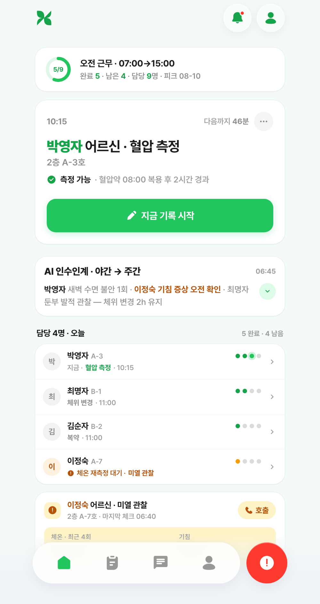

SERVICE PROPOSAL · 종합 보고 · 2026년 8월
하루안부
제안 종합 보고
요양시설의 가족 · 어르신 · 요양보호사 · 의료진 네 역할을
하루 한 번의 안부로 잇는 케어 커뮤니케이션 서비스.
무엇을 만들었고, 왜 바로 현업에 못 가며, 그래서 무엇을 부탁드리는지를 한 권에 담았습니다.
김지욱 · 손예찬 · 고해은 | 서비스 디자인 / UX | haruanbu.site | 2026-08-07
00 · 지금까지 한 일
설계로 끝내지 않고
동작하는 것까지 만들었습니다
기획서 한 권이 아니라, 네 역할이 각자 쓰는 화면을 전부 만들어 공개 배포했습니다. 아래는 저장소에서 직접 센 수치입니다.
클릭해서 동작하는 고충실도 프로토타입
의료진앱 · 의료진웹 · 온보딩
여섯 제품이 같은 규칙을 공유
고유 토큰 이름 기준(다크모드 재선언은 1회로 계산)
민법 · 사회복지사업법 (+시행령 · 시행규칙)
국내 5개 법률 · 조 번호까지 특정해 대조한 것만
전체 목록은 2부 부록 1 · 해외 11개 조문은 별도
사람이 눈으로 못 잡는 것을 코드로 잡습니다
기간과 밀도
| 항목 | 값 | 뜻 |
|---|---|---|
| 작업 기간 | 2026-03-22 ~ 현재 | 약 5개월. 저장소 첫 커밋 기준 |
| 커밋 | 101회 | 한 번에 만든 것이 아니라 고쳐 온 기록입니다 |
| 다국어 | 영어 23화면 · 중국어 5화면 | 중국어는 요양보호사앱에 한정. 전체 번역이 아님을 밝힙니다 |
| 공개 배포 | haruanbu.site | 지금 이 문서를 읽으시면서 바로 열어보실 수 있습니다 |
| 제안 문서 | 원고 24종 · 완성 PDF 12종 | 이 보고서는 그중 핵심 3부를 묶은 것입니다 |
이 숫자들로 주장하려는 것은 하나뿐입니다. 저희는 아이디어를 들고 온 것이 아니라, 만들어 보고 나서 무엇이 안 되는지 알게 된 상태로 왔습니다. 그래서 이 보고서의 절반은 성과가 아니라 한계입니다.
00-B · 한 장 요약
세 가지만 기억하시면 됩니다
1. 무엇을 만들었는가
요양시설에서 요양보호사가 이미 매일 쓰고 있는 기록(노인장기요양보험법 시행규칙 별지 제16호서식)을 가족 · 어르신 · 의료진에게 각자의 언어로 자동 전달하는 구조입니다. 현장에 새 입력을 요구하지 않는 것이 설계의 전제입니다. 종사자별 입력 통계 · 미입력 알림 · 작성자 비교 기능은 의도적으로 만들지 않았습니다 — 기록이 일하는 사람을 평가하는 도구가 되면 현장이 거부하기 때문입니다.
2. 왜 바로 현업에 못 가는가
| 층 | 한계 | 돈으로 해결되나 |
|---|---|---|
| 기술 | 서버 · 인증 · AI 미구현. 앱의 서버 호출 0건 | 됩니다 — 시간과 인력 |
| 법·제도 | 민감정보 처리 의무, 의료기기 규제 경계, 기록 열람 권한 | 안 됩니다 — 설계와 절차의 문제 |
| 조직 | 법인 없음 → 계약 주체가 될 수 없음 | 됩니다 — 설립하면 |
| 검증 | 실사용 데이터 · 고령 사용자 테스트 없음 | 부분 — 시간과 현장 접근 |
그래서 저희는 바로 제안하지 않고 한계 파악 → 제출처 조사 → 현장 접촉이라는 순서를 하나 앞에 두었습니다. 이 보고서의 구성이 곧 그 순서입니다.
3. 무엇을 부탁드리는가 — 두 가지, 순서가 있습니다
| 순위 | 요청 | 왜 이것이 먼저인가 |
|---|---|---|
| 1 | 학교 · 산학협력단을 경유한 연구 협력 형태로 갈 수 있게 해주십시오 | 벽이 둘인데 같은 문으로 풀립니다. ① 법인이 없어 계약 주체가 될 수 없고 ② 개발 인력이 없습니다.
산학협력단 · 캡스톤 · 연구실 연계가 둘 다 푸는 유일한 현실적 경로입니다. 9월이 골든타임입니다 — 학기 시작에 매칭이 열리고, 놓치면 다음은 2027년 3월입니다 |
| 2 | 이야기 나눠볼 만한 분을 소개해 주실 수 있을까요 | 콜드 컨택 대비 성공률이 수 배입니다. 솔직히 박람회 사흘보다 소개 한 다리가 강합니다 |
지금 부탁드리는 것은 파일럿이 아닙니다. 시스템 개발에 2~4개월이 필요하므로 오늘 시작하자는 말씀을 드릴 수 없습니다. 지금 필요한 것은 현장 인터뷰 2시간과 자문이고, 8주 파일럿은 시스템이 만들어진 뒤의 이야기입니다.
차례
이 보고서의 구성
전체 70쪽입니다. 세 개의 문서를 한 권으로 묶었습니다. 이 순서가 곧 저희 절차의 논리입니다 — 만들었다 → 한계를 알았다 → 갈 곳을 찾았다.
| 부 | 제목 | 무엇을 답하는가 | 시작 쪽 |
|---|---|---|---|
| 1부 | 서비스 제안서 | 무엇을 만들었는가 — 문제 정의 · 서비스 구조 · 강점과 한계 · 차별화 · 로드맵 | 5 (32쪽) |
| 2부 | 한계와 법적 리스크 | 왜 바로 현업에 못 가는가 — 국내법 · 국제법 조문 대조. 항목마다 검증 등급 표기 | 37 (16쪽) |
| 3부 | 제출 전략 | 그래서 어디로 가는가 — 8월 캘린더 · 제출처 전수 · 기관별 접근 방식 | 53 (18쪽) |
읽으시는 방법
- 시간이 없으시면 앞의 두 쪽(지금까지 한 일 · 한 장 요약)만 보셔도 됩니다. 요청은 거기 다 있습니다.
- 1부 §04에 강점 3 / 일부러 안 한 것 4 / 못 한 것 4를 정리해 두었습니다. 저희 상태를 가장 빨리 아실 수 있는 곳입니다.
- 2부는 법률 자문이 아닙니다. 공개된 법령과 가이드라인을 대조한 학생팀의 자체 검토이며, 변호사 검토를 받은 적이 없습니다.
- 모든 수치는 출처와 연도가 확인된 것만 썼습니다. 재확인에 실패한 수치는 본문에 "인용하지 않는다"고 명시해 두었습니다.
이 보고서에 담지 않은 것 — 박람회 현장용 인쇄물, 파일럿 서식, 영문 자료, 시장 근거 대장 등 작업 문서 20여 종이 더 있습니다. 필요하다고 하시면 그때 보내드리겠습니다. 지금은 이 한 권이면 충분하도록 만들었습니다.
SERVICE PROPOSAL · 2026
하루안부
서비스 제안서
요양시설의 가족·환자·요양보호사·의료진 네 역할을 하루 한 번의 안부로 잇는 케어 커뮤니케이션 플랫폼.
SUMMARY
여섯 개의 숫자로 읽는 제안
어르신으로는 약 24만 명(수급자 중 시설급여 20%)
건보공단 2025 통계연보 · 복지부 2025 장기요양실태조사
인정자 123만 5천명 · 건보공단
KDI 2026.4 (권정현)
그런데도 절반이 남았다
보건복지부 2025년 장기요양실태조사 (2026.8 발표)
2023년 노인실태조사
우리는 신개념을 주장하지 않는다. 해외에는 같은 카테고리가 이미 성숙해 있다. 대신 요양보호사가 남긴 돌봄 기록을 어르신 본인을 포함한 네 역할에게 전달하는 구성이 국내외 공개 자료 기준 확인되지 않았다는 점, 그리고 아직 하지 못한 것이 무엇인지를 정확히 적는다.
01 · 왜 지금인가
수요는 2.4배가 되고
인력은 99만명 모자란다
사람을 더 뽑아 해결할 수 있는 규모가 아니다. 같은 인력이 같은 시간에 더 많은 것을 전달하게 만드는 것 외에 선택지가 좁다.
요양보호사 부족 규모 추이
KDI 『노인돌봄 서비스 인력의 전망과 정책 방향』(2026.4). 막대 길이는 2043년 값 기준 상대 비율.
남는 인력마저 고령화한다
요양보호사 중 60세 이상 비중. 같은 출처. — 입력하는 쪽도 고령 사용자라는 뜻이며, 이는 설계 전제를 바꾼다.
배경 지표
| 지표 | 수치 | 출처 |
|---|---|---|
| 초고령사회 진입 | 20.0% | 65세 이상 1,024만 4,550명 (2024-12-23) · 행정안전부 주민등록 |
| 고령화 속도 | 7년 4개월 | 고령→초고령. 일본 11년·독일 34년·프랑스 40년 · 통계청 |
| 장기요양 인정자 | 123만 5천명 | 2025년, 전년 대비 +6.0% · 건보공단 2025 통계연보(2026.6.29 승인) |
| 노인 1인당 연간 진료비 | 522.9만원 | 2022년, 본인부담 123.6만원 · 통계청 2024 고령자통계 |
| 고령비중 전망 | 2050년 40.1% | 2036년 29.9% · 통계청 장래인구추계 2022~2072 |
02 · 문제 정의
정보가 없는 게 아니라
만들어진 정보가 이동하지 않는다
| 역할 | 지금 | 결과 |
|---|---|---|
| 가족 | 전화하거나 면회 가지 않으면 알 수 없다 | 불안이 상시화. 시설에 반복 문의 |
| 어르신 | 가족에게 닿을 수단이 없다 | 자기 상태를 스스로 말할 통로 없음 |
| 요양보호사 | 기록은 남기지만 가족에게 전달되지 않는다 | 같은 설명 반복. 기록 노동이 소통이 되지 않음 |
| 의료진 | 상태 변화가 구두·수기로 흩어진다 | 판단 근거가 늦게 도착 |
코로나가 만든 문제가 아니다
요양보호사와 가족이 서로에 대해 상반된 기대와 요구를 나타내었으나, 서로 효과적으로 의사소통할 수 있는 방법과 기회가 미흡했다.
최희경, 「노인요양시설의 돌봄 서비스에 대한 가족과 요양보호사의 인식 및 기대 비교 연구」, 『가족과 문화』 22(4), 2010
2010년 연구가 이미 지적한 구조적 부재다. 코로나19는 원인이 아니라 노출 계기였다. 접촉 대면면회는 2022-10-04 허용됐지만(보건복지부), 면회는 재개됐고 소통 구조는 복구되지 않았다.
15년이 지났는데 — 2026년 8월 조사
보건복지부가 2026년 8월 6일 발표한 「2025년 장기요양실태조사」는 수급자 4,500명과 수급자 가족 3,368명을 조사했다. 결과는 이렇다.
| 항목 | 값 | 읽는 법 |
|---|---|---|
| 장기요양보험 제도 만족도 | 84.6% | 제도 자체는 잘 작동한다 |
| "서비스로 부양부담이 완화됐다" | 70% 이상 | 돌봄의 양은 채워지고 있다 |
| "여전히 돌봄 부담을 느낀다" | 51.6% | 그런데도 절반이 남았다 |
남은 절반은 서비스가 부족해서가 아니다. 제도는 만족스럽고 부담도 줄었다. 우리는 그 나머지의 일부가 "오늘 어떠셨는지 모른다"는 데서 온다고 본다. 돌봄을 더 하겠다는 것이 아니라 그 모름을 없애겠다는 것이 이 제안이다.
단, 51.6%의 원인이 소통 부재라는 것은 조사 결과가 아니라 우리 해석이다. 조사는 "절반이 여전히 부담을 느낀다"까지만 말한다. 그 원인을 확인하는 것이 파일럿의 목적 중 하나다.
보건복지부 「2025년 장기요양실태조사」(2026-08-06 발표) · 한국보건사회연구원·한국리서치 수행 · 조사기간 2025-08-13~11-19 · 표본: 수급자 4,500 / 가족 3,368 / 기관 1,991 / 요원 4,500
그런데 왜 기존 앱으로는 안 되는가 — 고령자 디지털 역설
보건복지부 『2023년 노인실태조사』
기기는 이미 손에 있고, 부족한 것은 그들이 쓸 수 있게 설계된 앱이다. 그리고 그것을 당사자가 1순위로 요구하고 있다. 하루안부의 "버튼 하나" 원칙은 취향이 아니라 이 데이터에 대한 응답이다.
그리고 시설에게는 이게 이미 행정 부담이다
가족의 불안은 정서로만 끝나지 않는다. 제도화된 청구가 되어 시설로 돌아온다.
2023년부터 시설급여 제공기관은 CCTV 설치가 법정 의무다 (노인장기요양보험법 제33조의2·제33조의3, 2023-06-22 시행). 침실을 포함한 7개 구역에 각 1대 이상, 영상은 60일 이상 보관한다. 그리고 보호자가 열람을 청구하면 시설은 10일 안에 서면으로 통지하고, 열람대장을 3년간 보관해야 한다.
가족이 CCTV를 보겠다고 하는 것은 불안하기 때문이다. 시설은 그 불안을 사후에, 서류로, 10일 안에 처리하고 있다. 매일 안부가 도착하면 그 청구 자체가 줄어든다. 가족에게는 안심이고, 시설에는 행정 부담 감소다.
단 — 열람 청구가 실제로 줄어드는지는 검증된 바 없다. 우리 추정이며, 파일럿의 측정 지표 후보로 올려 둔 항목이다. 그리고 하루안부는 CCTV 영상에 접근하지 않는다. 우리가 다루는 것은 요양보호사가 선택해 남긴 기록과 사진뿐이다.
03 · 제안 서비스
한 번 입력하면
네 방향으로 도착한다
사진 · 요양보호사와 대화
가족 메시지 수신
확인 · 지시
기록이 곧 소통
실제 화면
아래는 동작하는 프로토타입을 그대로 캡처한 것이다. haruanbu.site 에서 지금 열어볼 수 있고, 클릭하면 화면이 넘어간다. 다만 데이터는 고정된 예시이며 서버를 부르지 않는다.

01 · 입력
요양보호사 앱
근무 진행률 · 지금 할 일 · 담당 어르신 4명의 진행 상태. "지금 기록 시작" 하나로 해당 항목이 열린다 — 찾아 들어가지 않게 했다.

02 · 도착
보호자(가족) 앱
사진과 요양보호사 코멘트가 맨 위, 수치는 그 아래. 작성자 이름과 시각이 함께 간다 — 기계 요약이 아니라 사람이 본 것이라는 표시다.

03 · 도착
환자(어르신) 앱
왼쪽은 가족이 보낸 것, 오른쪽은 오늘 할 일. 읽히는 크기와 누를 수 있는 크기를 먼저 고정하고 거기 들어가는 것만 남겼다.
의료진 앱 화면은 이 문서에 싣지 않았다 — 현재 화면 문구가 아래 "AI가 하는 것과 하지 않는 것" 표와 어긋나 있어 정리 중이다.
AI가 하는 것과 하지 않는 것
| 구분 | 내용 | 이유 |
|---|---|---|
| 한다 | 요양보호사가 입력한 사실을 읽기 쉬운 문장으로 요약. 일정·복약 리마인더. 기록 검색 | 사실 전달은 비의료 영역 |
| 안 한다 | 이상 판단 · 바이탈 해석 · 진단이나 치료 시사 · 복약 판단 · 투약량 계산 | 의료기기(SaMD) 규제 회피를 위한 설계 결정 |
알림 문구를 "혈압 이상 감지"(앱이 판정) 에서 "혈압이 평소보다 높게 측정됐어요"(측정 사실 전달) 로 수정하고, 판단은 간호사 확인 흐름으로 넘겼다. 판정 주체를 앱에서 사람으로 옮긴 것이다.
04 · 강점과 한계
가진 것은 증거로 보이고
없는 것은 먼저 말한다
제안서에서 가장 많이 부풀려지는 대목이므로 있는 그대로 적는다. 우리는 학생팀 · 법인 없음 · 백엔드 없음이고, 이 셋은 실사 한 번이면 드러난다. 그래서 순서를 뒤집었다. 강점은 확인 가능한 형태로 세우고, 한계는 상대가 묻기 전에 우리가 먼저 말한다.
우리가 실제로 가진 것 — 셋 다 지금 확인 가능하다
| 강점 | 내용 | 확인 방법 |
|---|---|---|
| 완성된 설계 자산 | 4역할 전체의 고충실도 프로토타입. 고유 화면 39개(언어 변형 포함 67개 파일). 클릭 가능하고 공개 배포 중 | haruanbu.site — 지금 열어볼 수 있다 |
| 법 대조를 마친 설계 | 개인정보보호법 · 의료법 · 노인장기요양보험법을 조문 단위로 대조하고, 의료기기(SaMD) 회피 경계를 스스로 그어 기능과 문구를 실제로 수정했다 | 본 문서 07장 · 문구 수정 이력 |
| 검증된 수치만 쓴다는 규율 | 미검증 수치를 전량 걷어내고 출처·연도가 확인된 것만 남긴 검증 대장을 운영한다. 스스로 넣었던 수치도 확인 실패 시 되돌렸다 | 본 문서 11장 · 수치검증대장 |
일부러 하지 않은 것 — 못 한 게 아니라 안 한 것
한계와 설계 결정을 섞으면 둘 다 약해진다. 아래는 넣을 수 있었지만 의도적으로 뺀 것이다.
| 빼기로 한 것 | 왜 뺐나 |
|---|---|
| 이상 감지 · 위험도 판정 · 복약 판단 | 넣는 순간 의료기기(SaMD) 허가 대상이 된다. AI를 요약·전달·검색까지만으로 묶고 판단은 전부 간호사·의사에게 남겼다 |
| 진료기록 연동 | 의료법상 열람 범위를 우리가 정할 수 없다. 우리가 다루는 것은 시설이 생성한 돌봄 기록뿐이다 |
| 기록 시스템(전자차트·청구) 자체 구축 | 시설에는 이미 백오피스 표준이 있다. 기록은 기존 시스템, 소통은 하루안부로 선을 그었다 |
| 요양보호사의 추가 입력 화면 | 업무가 늘면 현장에서 안 쓴다. 이미 남기는 기록을 재사용하는 구조로 설계했다. 입력 항목은 우리가 정한 것이 아니라 노인장기요양보험법 시행규칙 별지 제16호서식(장기요양급여제공기록지)이 이미 요구하는 항목이다 — 특이사항, 상태변화 시 조치사항, 작성자 서명 |
아직 못 한 것 — 그리고 그것이 곧 우리의 요청이다
한계를 나열로 끝내지 않는다. 없는 것 하나하나가 우리가 요청하는 것 하나하나다.
| 축 | 없는 것 | 그래서 요청하는 것 |
|---|---|---|
| 기술 | 동작하는 백엔드. 서버 · DB · 인증 · 푸시 · AI 생성 모두 미구현. 앱의 서버 호출 0건 | 개발 역량 또는 개발 자금. 파일럿에서는 4역할 전부가 아니라 요양보호사 입력 → 가족 리포트 한 축만 만든다 |
| 법 · 보안 | 민감정보 처리에 필요한 암호화 · 접근통제 · 접속기록 시스템. 동의 화면은 있으나 이를 뒷받침할 시스템이 없다 | 준비 전까지 실제 어르신 정보를 받지 않는다. 보안 요건을 Phase 0 첫 항목으로 둔다 |
| 실적 | 도입 레퍼런스. 실제 시설 데이터로 검증한 적 없음. 고령 사용자 대상 사용성 검증도 없음 | 파일럿 시설 1곳. 첫 한 곳에는 우리가 가진 것을 전부 쓴다 |
| 조직 | 법인 · 사업자. 계약 주체가 될 수 없고 위탁 계약도 불가 | 학교 · 지도교수 경유의 연구 협력 형태. 데이터를 우리가 보관하지 않는 구조도 검토 가능 |
구현 상태 상세 — 항목별로
| 항목 | 상태 | |
|---|---|---|
| 4역할 화면 · 사용자 흐름 | 있음 | 고유 화면 39개, 언어 변형 포함 67개 파일. 클릭 가능한 고충실도 프로토타입, 공개 배포 중 |
| 디자인 시스템 · 자동 감사 도구 | 있음 | 토큰 · 접근성 · 구조 검사 스크립트 운영 |
| 개인정보 동의 화면 · 권한 분리 설계 | 있음 | 민감정보 별도 동의 화면 실제 구현 |
| 서버 · 데이터베이스 | 없음 | — |
| 로그인 · 인증 · 실제 권한 통제 | 없음 | 화면만 존재 |
| 실시간 동기화 · 푸시 알림 | 없음 | — |
| AI 리포트 자동 생성 | 없음 | 현재 문구는 사람이 작성한 예시 |
| 법인격 · 계약 주체 | 없음 | — |
우리는 완성된 소프트웨어를 팔러 온 것이 아니다. 그건 아직 없고, 없다고 먼저 말한다. 우리가 가지고 온 것은 화면 단위까지 확정된 설계와, 규제에 걸리지 않도록 미리 그어 둔 경계선이다. 디지털 헬스케어에서 프로젝트를 죽이는 것은 대개 기술이 아니라 이 두 가지가 없어서다.
만들 힘이 아직 없다. 그래서 만들 힘이 있는 곳을 찾는다. 이것이 이 제안서의 전부이고, 위의 "요청하는 것" 칸이 우리가 실제로 부탁드리는 내용이다.
05 · 차별화
해외에는 이미 있다.
그 사실에서 시작한다
교수 피드백("해외에 비슷한 시스템이 있는지 찾아보라")에 대한 답은 "있다"이다. 숨기지 않고 전제로 삼는다.
해외 벤치마크
| 제품 (국가) | 성격 | 공공 연계 | 하루안부 대비 |
|---|---|---|---|
| Caremerge → Icon 미국 | 2022-06 VoiceFriend가 가족·입주자 인게이지먼트 사업을 인수해 Icon으로 리브랜드. Caremerge는 임상 부문만 별도 운영 대상 — Independent/Assisted Living · CCRC · Skilled Nursing · PACE · Home Health | 민간 | 이 분리 자체가 우리 논거 — 아래 참조 Resident App & Portal 있음. 단 돌봄 기록·일일 리포트·투약은 표기 없음 |
| How's Mom 미국 SafeKeeping | 가족이 실시간 차트 열람 — 투약 목록·바이탈·영양·시설 알림·방문 일정 PointClickCare · MatrixCare 연동. 대상은 Skilled Nursing · Assisted Living | 민간 | 기능이 가장 직접 겹친다. 어르신 본인용 앱은 표기 없음 규모 수치는 공식 페이지에 표기가 없어 인용하지 않는다(2026-08-07 재확인) |
| InteliChart 미국 Family Portal | 가족이 담당 의료진 목록 · 처방과 투약 시행 · 최신 바이탈을 본다 HIPAA 준수 메시지 — 시설이 소통 창구를 일원화. PointClickCare 연동(2020-07-06 공식 발표) 양방향 API | 민간 | 가족-스태프 전용. 입주자 본인 접근은 공식 페이지·보도자료 어디에도 없다 연동 EHR 수·환자 수·시설 수는 전부 자기보고라 인용하지 않는다(2026-08-09 재확인) |
| Birdie 영국 | 재가케어 코디네이션 3앱 | NHS England 등재 | 역할 구성 최근접. 단 재가 중심, 본인앱 없음 |
| Nourish 영국 | 디지털 케어기록(운영 중심) | NHS England 등재 | 인접군. 문서화 중심 |
| Brenna 호주 | 간호사↔가족 소통앱. RN이 1분 이내 업데이트, 신호등 방식 심각도 표시 | ARIIA 연구비 · 11개 홈 | 동료심사 파일럿 연구 존재 — Collegian, 「Piloting a communication app for nurses and family/friends in residential aged care」 S1322-7696(25)00061-7. 본문은 유료 장벽으로 미확보(2026-08-07 재시도 403). 산업지의 "민원 0건·활성화 85%"는 시설 자기보고라 인용하지 않는다 |
주의 — NHS 등재와 ARIIA 연계는 표준 인증 및 연구자금이지 전국 의무배포가 아니다. 해외 제품의 성과 수치는 검증되지 않아 본 제안서에서 인용하지 않는다.
가장 종합적이던 Caremerge조차 2022년에 가족 소통 사업이 떨어져 나갔다. VoiceFriend가 인수해 Icon이 됐고, Caremerge는 임상 부문만 남았다.
그런데 Icon의 실물을 확인해 보니(2026-08-05 · 2026-08-07 재확인) 하는 일이 다르다 — 일정·프로그램, 브랜드 커뮤니케이션, 직원 관리, 편의시설 운영. 돌봄 기록 · 가족 일일 리포트 · 투약 관리는 페이지에 없다.
2026-08-07 정정 두 가지. ① 대상을 "senior living"이라고만 적었으나 실제로는 Skilled Nursing · PACE · Home Health까지 명시돼 있다. ② 「Resident App & Portal」이 솔루션에 있다 — 입주자 본인 화면이 있다는 뜻이다. 우리 쪽에 유리하게 적혀 있던 두 곳을 고친다.
| 축 | 주인 | 우리 위치 |
|---|---|---|
| 임상 기록 (EHR/eMAR) | Caremerge 등 | 건드리지 않는다 |
| 커뮤니티 인게이지먼트 | Icon 등 | 우리 영역 아님 |
| 돌봄 기록 → 가족의 언어 | 주인이 분명하지 않다 | 여기가 하루안부 |
분리는 실재한다 — 우리가 그은 선("기록은 기존 시스템, 소통은 하루안부")은 역량 부족으로 줄인 게 아니라 시장이 도달한 구조다. 다만 갈라져 나간 "소통"은 커뮤니티 생활 소통이지 돌봄 소통이 아니다. 웹페이지 기준 판단이며 실제 제품에 미기재 기능이 있을 수 있다 — 국내 경쟁사에 적용한 것과 같은 한계다.
How's Mom(SafeKeeping)은 자체 기록 시스템을 만들지 않는다. PointClickCare · MatrixCare에 연동해 그 기록을 가족에게 전달한다. 연동이 안 되는 시설을 위해 "Connections Hub"를 따로 둘 뿐이다.
둘 다 미국 장기요양 EHR의 주요 사업자다. "기록 위에 소통 계층을 얹는다"는 우리 포지션은 미국에서 이미 제품으로 존재한다. 우리가 발명한 구조가 아니라는 뜻이고, 그래서 국내에서도 케어포 위에 얹는 경로가 현실적이라는 근거가 된다.
여섯 개를 다 확인하고 나서 보인 것 — 아무도 기록을 새로 만들지 않는다
위 여섯 제품을 공식 페이지 단위로 전수 재확인했다. 여섯 중 다섯에서 우리 기재가 수정됐다. 그런데 개별 정정보다 중요한 건 셋에서 같은 구조가 나왔다는 점이다.
| 제품 | 자체 돌봄 기록 시스템 | 무엇 위에 얹히는가 |
|---|---|---|
| How's Mom 미국 | 만들지 않는다 | PointClickCare · MatrixCare |
| InteliChart 미국 | 만들지 않는다 | PointClickCare 외 다수 |
| Icon 미국 | 만들지 않는다 일정·커뮤니티 계층 | 시설 운영 시스템 |
미국 가족 포털은 예외 없이 「기록 위에 얹는 계층」이다. 기록을 새로 만드는 곳이 하나도 없다. 그럴 필요가 없기 때문이다 — 붙을 EHR이 이미 시설에 깔려 있다.
국내에는 그 층이 얇다. 케어포·시니어앤라이프가 있지만 사실상 표준의 위치는 아니다. 국내에서 같은 제품을 만들면 얹을 대상이 없거나, 있어도 시설마다 다르다.
파일럿에서 요양보호사가 직접 입력하는 축을 고른 건 규모가 작아 단순하게 간 것이 아니라 국내에 얹을 기록 층이 없어 그 층부터 만들어야 하기 때문이다.
동시에 이건 우리 약점이다. 미국 제품은 이미 입력된 기록을 전달만 하면 되지만 우리는 입력 부담을 새로 만든다. 그래서 「입력하는 사람은 한 명뿐」이라는 설계와 실증에서의 입력 시간 측정은 선택이 아니라 반드시 통과해야 하는 검증 항목이 된다.
영국 제도에서 배운 것 — 우리에게는 증명할 방법이 없다
영국은 사회적 돌봄 기록 소프트웨어에 대해 NHS England가 공식 심사 목록(DSCR Assured Solutions List)을 운영한다. 2026-08-07 확인 시점 기준 22곳이 올라 있고 Birdie·Nourish 둘 다 포함돼 있다. DSCR Capability Assessment and Standards Assurance Process를 통과해야 오를 수 있고, 이 목록에 있는 제품을 골라야 지역 ICB의 디지털화 예산을 받을 수 있다. 정부가 만든 조달 관문이다.
국내에도 대응 제도가 있다. 다만 다루는 대상이 다르다.
| 영국 DSCR Assured Solutions | 국내 표준연계모듈 검증 | |
|---|---|---|
| 근거 | NHS England DSCR Capability Assessment | 사회복지사업법 제6조의2 (사회복지시설 업무의 전자화) |
| 적용 대상 | 돌봄 기록 SW를 쓰는 모든 사회적 돌봄 제공자 | 같은 법 제42조에 따른 보조금을 받는 법인·시설 |
| 심사 대상 | 돌봄 기록 소프트웨어 | 재무·회계 처리 정보시스템 |
| 심사 항목 | 상호운용성 · 임상 안전성 · 데이터 품질 · 보안 | 표준연계모듈 적용 여부 |
국내 제도는 돈의 흐름을 표준화했지, 돌봄 기록의 질과 상호운용성은 다루지 않는다. 그 공백에는 양면이 있다 — 진입 장벽이 낮은 대신, 신뢰를 증명할 공인된 수단도 없다. 인증이 없으니 기준을 빌려온다. 파일럿에서 영국 DSCR이 요구하는 항목을 체크리스트로 삼아 무엇을 충족했고 무엇을 못 했는지 우리가 먼저 문서로 내놓는다. 심사받을 곳이 없으면 스스로 감사받을 형식을 만든다.
검증 — Birdie·Nourish의 목록 등재는 NHS England 공식 목록 페이지에서 직접 확인(2026-08-05). Nourish의 "최초 인증 · 14개 표준 전부 충족"은 벤더 자기보고라 인용하지 않는다. 국내 근거는 사회복지사업법 제6조의2로 확정(2026-08-05). 다만 이 의무는 같은 법 제42조 보조금을 받는 법인·시설에 걸리므로 "모든 장기요양기관에 적용된다"고 말하면 틀린다 — 장기요양기관은 사회복지법인 운영과 개인 운영이 섞여 있다.
국내 경쟁
| 서비스 | 연결 역할 | 겹침 | 빈자리 |
|---|---|---|---|
| 패밀리노트 키즈노트 계열 | 시설장·직원·보호자 (3) · 무료 | 알림장 · 공지 · 앨범 · 식단표 앱 없이 카카오톡으로도 확인 | 대상이 주야간보호·재가방문시설 — 입소 요양원이 아니다. 투약·건강기록·의료진·본인앱 없음 |
| 케어포 한강시스템 | 보호자·요양시설·수급자 | 시설급여·주야간보호·가정방문 통합관리 + 재무회계 보호자용 가족돌봄앱 + 직원용 앱 | 공식 페이지 기준 어르신 본인앱·의료진 전용 앱 없음. 가족앱 세부 기능은 2026-08-07 공개 확인 — 아래 표 |
| 케어닥 | 보호자·케어기버·시니어 (3) | 병원간병·집에서간병·가족간병, 가사돌봄·방문운동, 시설 찾기 돌봄 신청·매칭이 중심 | 소비자 매칭 서비스 기준 건강정보·바이탈 공유, 본인앱, 의료진 기능 명시 없음. 단 별개 제품 케어옵스(2026-06 출시)는 시니어타운용으로 입주자·보호자 앱을 포함한다 — 대상이 다르지만 겹치는 축이 있다 |
| 시니어앤라이프 드림에이아이랩 | 보호자 · 기관 · 의료 · 공공 | 상용베타(2026-08-07 표기). 시설 검색·구인구직·장기요양 안내 운영 중 의료 연계 — 수면·활동·복약·식사·낙상 등 생활 데이터 요약 리포트를 진료·치료에 참고한다고 표기 | 어르신 본인용 앱 표기 없음 · 도입 실적 표기 없음 |
우리의 차별점 세 가지
- 환자 본인이 사용자다. 대부분의 서비스에서 어르신은 데이터 대상이지 사용자가 아니다. 의료법 제21조 제1항상 본인 열람권은 요건 없이 합법이므로, 법적으로도 가장 안전한 축이다.
- 간호사와 요양보호사를 분리한다. 해외 제품 다수가 이를 '스태프'로 묶는다. 그러나 한국에서 두 역할은 법적 업무 범위가 다르다(요양보호사의 의료행위는 의료법 제27조 위반). 역할 분리는 UI 취향이 아니라 법 준수 설계다.
- 고령 사용자 기준으로 설계됐다. 노인의 1순위 요구(맞춤형 앱 29.5%)와 요양보호사 고령화(2043년 60세 이상 72.6%)에 대응한 큰 활자·고대비·버튼 하나 원칙.
각 사의 '없음'은 2026-08-02 공식 웹사이트 4사 전수 직접 확인 결과다(패밀리노트·케어포·케어닥·시니어앤라이프). 앱 스토어 설치 확인으로 한 번 더 보강하면 더 단단해진다.
케어포 도입 기관 "14,000개 이상"은 2차 자료이며 공식 페이지에 표기가 없어 수치 없이 서술한다.
가장 가까운 경쟁 — 케어포 가족돌봄앱을 항목 단위로 대조했다
정정 — 옛 판에서 "가족앱 세부 기능 미공개"라고 적었으나, 2026-08-07 공식 페이지 (carefor.co.kr/addservice/family_app.php)에서 시설급여 12개 항목이 전부 공개돼 있는 것을 확인했다. 우리 쪽에 유리한 서술이었으므로 정정한다.
| 항목 | 케어포 가족돌봄앱 (시설급여) | 하루안부 |
|---|---|---|
| 건강정보 | 있다 혈압·혈당·맥박 등 | 있다 |
| 앨범 · 사진 | 있다 | 있다 |
| 식단표 | 있다 | 없다 |
| 담당자 상담 | 있다 상담하기 | 있다 |
| 급여제공내역 · 명세서 · 입금내역 | 있다 | 없다 — 행정은 다루지 않는다 |
| 물리(작업)치료내역 · 프로그램일정 | 있다 | 없다 |
| 가정통신문 · 공지사항 | 있다 | 없다 |
| 면회예약 | 있다 | 없다 — 우리가 없는 기능이다 |
| 어르신 본인 화면 | 표기 없음 | 있다 |
| 의료진 화면 | 표기 없음 | 있다 |
| 전달 방식 | 보호자가 앱에서 조회 자동 일일 리포트 표기 없음 | 하루 한 번 도착 |
"가족에게 시설의 정보를 전달한다"는 것 자체는 차별점이 아니다. 건강정보 · 사진 · 상담은 이미 있고, 행정 기능은 오히려 케어포가 넓다. 면회예약처럼 우리에게 없는 것도 있다.
남는 차이는 하나다 — 어르신 본인과 의료진까지 네 역할을 연결하는 것. 공식 페이지 기준 케어포에는 어르신 본인 화면도, 의료진 화면도 표기가 없다.
"본인 앱이 없다"는 주장은 시설 종별을 정확히 붙여야 성립한다
케어닥이 2026년 6월 17일 「케어옵스」를 출시했고, 거기에는 입주민 본인 앱이 있다(식사·커뮤니티·주차 예약 조회 + 스마트워치 건강 모니터링). 보호자 앱과 직원 시스템도 함께다. 역할 구성만 보면 우리와 가장 가깝다.
그래서 대상 시설의 법적 종별을 붙이지 않으면 우리 차별점은 성립하지 않는다. 노인복지법은 시설을 이렇게 나눈다.
| 노인복지법상 종별 | 포함 시설 | 장기요양 시설급여 | 이 영역의 제품 |
|---|---|---|---|
| 노인주거복지시설 제32조 |
양로시설 · 노인공동생활가정 · 노인복지주택(실버타운) | 대상 아님 | 케어닥 케어옵스 — 기사 명시 대상은 노인복지주택·양로시설·시니어 레지던스 |
| 노인의료복지시설 제34조 |
노인요양시설 · 노인요양공동생활가정 | 대상 6,361개소 | 케어포(백오피스+가족앱) · 본인 앱·의료진 앱은 확인되지 않음 |
"장기요양 입소시설을 대상으로는 어르신 본인 앱을 가진 사례를 확인하지 못했다." 한정어 없이 "본인 앱은 우리뿐"이라고 말하면 케어옵스로 반박당한다. 케어옵스 기사에는 장기요양 입소시설 적용 여부가 명시돼 있지 않다 — "적용하지 않는다"가 아니라 "안 적혀 있다"이므로, 이 경계도 언제든 사라질 수 있다.
"네 역할 연결"도 뭉뚱그리면 안 된다 — 실제로 남는 건 한 자리다
역할을 하나씩 세어 보면 우리만 하는 것이 무엇인지 분명해진다.
| 제품 | 가족 | 현장 종사자 | 의료 | 어르신 본인 | 대상 시설 |
|---|---|---|---|---|---|
| 케어포 | 있다 | 있다 | 표기 없음 | 표기 없음 | 노인의료복지시설 포함 |
| 시니어앤라이프 | 있다 | 있다 | 있다 | 표기 없음 | 재가 + 요양원·요양병원 |
| 케어닥 케어옵스 | 있다 | 있다 | 표기 없음 | 있다 | 주거복지시설(시니어하우징) |
| 패밀리노트 | 있다 | 있다 | 없음 | 없음 | 주야간보호 · 재가방문 |
| 하루안부 | 있다 | 있다 | 있다 | 있다 | 노인의료복지시설 |
의료 연계는 이미 하는 곳이 있다 — 시니어앤라이프가 생활 데이터 요약 리포트를 진료에 참고하도록 연결한다고 표기한다. 가족과 현장은 전부 하고 있다.
비어 있는 자리는 어르신 본인 하나다. 본인 앱을 가진 케어옵스는 대상 시설이 다르다(주거복지시설).
Icon에는 「Resident App & Portal」이 있고 대상에 Skilled Nursing이 포함된다. "장기요양 입소시설 + 본인 앱"만으로는 Icon과 구분되지 않는다.
구분되는 지점은 무엇을 전달하느냐다. Icon이 다루는 것은 일정 · 프로그램 · 커뮤니티 소통이고 돌봄 기록 · 가족 일일 리포트 · 투약은 페이지에 없다. 반대로 돌봄 기록을 전달하는 How's Mom · InteliChart · 케어포에는 본인 앱이 없다. 특히 InteliChart는 2026-08-09 재확인에서 공식 페이지·보도자료 어디에도 입주자 본인 접근이 없다고 확인됐다 — 「표기 없음」이 아니라 확인된 부재다.
그래서 우리 문장은 이것 하나다 — 「요양보호사가 남긴 돌봄 기록을 어르신 본인을 포함한 네 역할에게 전달하는 구성」. "네 역할 연결"도, "본인 앱"도, 단독으로는 차별점이 되지 않는다.
| 제품 | 돌봄 기록을 전달하나 | 본인 앱 | 둘 다 |
|---|---|---|---|
| Icon (미국) | 아니다 일정·프로그램·커뮤니티 | 있다 | 아니다 |
| How's Mom (미국) | 그렇다 차트·투약·바이탈 | 표기 없음 | 아니다 |
| InteliChart (미국) | 그렇다 투약 시행·바이탈 | 없다 확인됨 | 아니다 |
| 케어포 (국내) | 그렇다 건강정보·사진·식단 | 표기 없음 | 아니다 |
| 케어옵스 (국내) | 일부 건강·생활 현황 | 있다 | 주거복지시설 대상 |
| 하루안부 | 그렇다 | 있다 | 여기 |
경쟁 상태는 빠르게 변한다. 시니어앤라이프는 2026-08-02 확인 때 "로드맵 P0 · 가동 전"이었으나 2026-08-07에는 "상용베타"로 바뀌어 있었다. 닷새 만이다. 이 표의 모든 판정에는 확인 날짜를 붙이고, 접촉 전에 다시 본다.
패밀리노트도 같은 방식으로 확인했다(2026-08-07) — 공식 페이지가 밝힌 사용자는 시설장 · 직원 · 보호자 셋이고, 대상은 주야간보호시설 · 재가방문시설이다. 어르신 본인용·의료진용 언급은 없다.
직전 판까지 "케어포는 조회식, 우리는 도착식"을 두 번째 차별점으로 적었다. App Store 앱 정보를 확인해 그 주장을 뺀다 — 가족돌봄 앱에 알림 기능이 있는 것으로 확인됐다(한강시스템(주), v1.1.2, 2025-05-11). 웹페이지에 자동 전송 표기가 없었을 뿐이다.
전달 방식을 차별점으로 쓰지 않는다. 실제로 하루 한 번 정리된 리포트가 가는지, 건별 알림만 가는지는 앱을 직접 설치해 봐야 안다. 그 전까지는 주장하지 않는다.
평점·리뷰 수는 인용하지 않는다 — 평가가 여덟 건뿐이라 만족도의 근거가 되지 못한다. Google Play 설치 수는 페이지가 스크립트로 그려져 확인에 실패했다. 사람이 직접 열어 확인할 항목으로 남긴다.
케어포는 시설 업무 전반(급여·재무회계·직원앱)을 덮는 사실상의 백오피스 표준이고 보호자용 가족앱도 제공한다. 하루안부가 "기록 시스템을 새로 만들겠다"고 말하면 정면 충돌이며 승산이 낮다. 그래서 포지션을 이렇게 정한다.
기록은 기존 시스템이 한다. 하루안부는 그 기록을 네 역할의 언어로 옮기는 소통 계층을 맡는다.
요양보호사가 남기는 기록은 법정 서식이다. 노인장기요양보험법 시행규칙 별지 제16호서식「장기요양급여제공기록지(시설급여/단기보호)」는 특이사항과 수급자 상태변화 시 조치사항을 기록하고 제공 종사자가 서명하도록 이미 요구한다. 우리가 받는 입력 항목은 우리가 정한 것이 아니다. 법이 이미 요구하는 항목이다.
이 포지션은 시설의 전환 비용을 낮추고, 장기적으로 연동 파트너십 경로를 열어둔다.
06 · 정책 정합성과 진입 경로
제안서의 진짜 수신자는
부처가 아니라 지자체다
정부 사업은 실재하고 취지도 우리 기능과 거의 그대로 겹친다. 다만 개별 팀의 단독 신청은 불가능하다.
| 채널 | 취지 | 적합도 | 진입 조건 |
|---|---|---|---|
| 스마트 사회복지시설 시범사업 복지부 · 중앙사회서비스원 |
"돌봄 기술을 활용한 스마트 사회복지시설(장기요양) 환경 구축, 종사자 업무부담 경감, 실제 시설 적용·실증·개선" | 최상 | 개별 기업 직접 신청 불가. 지자체와 컨소시엄 구성 필수 |
| 스마트 사회서비스 시범사업 2차 복지부 · 중앙사회서비스원 |
공고 진행 (게시 2026-05-28) | 상 | 동일 · 접수기간·지원규모는 공고문 원문 확인 필요 |
| 복지분야 AI 신속 상용화 지원 (AX-Sprint) 복지부 · 한국사회보장정보원 |
"AI 기술을 복지현장에 신속 도입, 국민 체감 복지 AI 서비스 창출·확산" | 상 | 2026년 회차 3/26~4/24 종료 → 2027년 회차 대비 |
| 지자체 통합돌봄 돌봄통합지원법 2026-03-27 시행 |
보건의료·건강관리·장기요양·일상돌봄 연계 | 중~상 | 이 법은 '지역계속거주(재가)' 지향 — 원리 수준 접점만 주장 |
2026년 공모에는 스마트홈 10개 · 스마트 사회복지시설 8개 컨소시엄이 참여했고, 대기업 컨소시엄이 선정되어 경기도·전남에서 모델을 개발 중이다(복지부 지원 61억 7,500만원). 우리가 경쟁하는 지점은 규모가 아니라 역할 통합의 완결성과 고령 사용자 UX다.
07 · 법 · 개인정보 대응
위반이 확정되는 항목은 없다.
대부분 설계로 넘을 수 있다
조문 단위 대조 결과. 법률 자문이 아니며, 실제 운영 전 변호사 검토와 소관 부처 유권해석을 받는다.
| 쟁점 | 근거 | 판정 | 우리 설계 |
|---|---|---|---|
| 건강정보 = 민감정보 | 개인정보보호법 제23조 (2025-10-02 시행) | 조건부 | 일반 동의와 분리된 별도 동의 화면 실제 구현 |
| 역할 간 공유 = 제3자 제공 | 제17조 제2항 | 조건부 | 제공받는 자·목적·항목·기간·거부 시 불이익 고지 후 동의 |
| 환자 본인의 조회 | 의료법 제21조 제1항 | 합법 | 별도 요건 없음 — 본인앱이 법적으로 가장 안전한 축 |
| 의료진 입력 정보의 가족 공유 | 의료법 제21조 제2·3항 | 회색 | 본인 전자동의 + 대리권 증빙, 진료기록·비의료 출처 이원화 |
| 요양보호사 업무 범위 | 의료법 제27조 (무면허 의료행위) | 주의 | 요양보호사앱은 열람·공유·전달 보조로 한정. 의료 판단은 의료인 계정 |
| 의료기기(SaMD) 경계 | 복지부 비의료 가이드(2022-09) / 식약처 디지털의료기기SW 가이드(2025-05) | 회색 | 자동 이상 경고·바이탈 해석·복약 판단 제거 |
| 기록의 성격 | 노인장기요양보험법 시행규칙 별지 제16호서식 | 정리됨 | '진료기록 관리'가 아닌 '급여제공기록 공유' 프레임 |
| 치매 어르신 대리동의 | 민법 제938조·제947조의2 | 입법 공백 | 본인 동의 기본값, 능력 저하 시 후견인 증빙 조건, 판단 불가 시 열람 제한 |
| 안전성 확보조치 | 기준 제7조④⑤ · 제8조①2호 | 조건부 | 전송·저장 암호화, 민감정보 접속기록 2년, 최소 권한 |
| 개인정보 영향평가(PIA) | 법 제33조① · 시행령 제35조 | 해당 없음 | 공공기관 + 5만명 이상이 의무 기준 — 소규모 파일럿은 법정 의무 아님 |
여섯 개 쟁점 중 위반 확정은 없다. 대부분 동의 설계·기능 한정·보안 조치로 회색에서 합법으로 끌어올릴 수 있는 우리 손 안의 영역이고, 외부 의존은 소수(유권해석·법원·식약처)다. 그리고 학생 파일럿 단계에서는 PIA·CSAP 법정 의무가 없어 실증 문턱이 생각보다 낮다.
08 · 한계와 대응
한계를 숨기지 않고
인지 · 대응 · 실증 3단으로 바꾼다
| 한계 | 지금 한 대응 | 실증 계획 |
|---|---|---|
| 효용 데이터 0 파일럿 미실시. 해외 성과 수치도 검증 실패 | 정량 주장 자체를 하지 않음 | 8주 파일럿 KPI 설계 |
| 동작하는 시스템 없음 서버·인증·동기화·AI 미구현 | 범위를 숨기지 않고 명시 | Phase 0에서 1개 축만 실제 구현 |
| 개발 인력 부족 팀 3인 디자인 중심 | 컨소시엄에서 우리 역할을 '서비스 설계·UX·법 준수 설계'로 정의 | 산학 연계 또는 파트너사 위탁 병행 |
| 레퍼런스·법인격 없음 | 프로토타입 고유 화면 39개 + 공개 배포로 실물 증명 | 시설 1곳 파일럿 → 첫 레퍼런스 |
| 운영 현실 미검증 시설 인프라·입력 부담·비용 주체 | 없는 근거를 만들지 않음 | 파일럿 사전조사 항목으로 전환 |
| 차별점이 '확정' 아닌 '미확인' | "공개 자료 기준 확인되지 않음"으로 정확히 표기 | 경쟁 4사 앱 직접 설치 확인 |
근거를 못 구한 항목은 만들어내지 않는다. 대신 "이것은 우리가 파일럿에서 직접 측정하겠다"로 전환한다. 심사에서 "모른다"보다 "측정 설계가 있다"가 강하다.
09 · 실증 로드맵
지금 상태로는
파일럿을 할 수 없다
그래서 순서를 이렇게 정했다. 아래 기간은 팀 3인(전임 아님) 기준 추정치이며 확정 일정이 아니다.
KPI — 무엇을 어떻게 재는가
| 지표 | 측정 | 성공 기준(가설) | |
|---|---|---|---|
| K1 | 가족의 시설 문의 횟수 | 시설 응대 기록, 주 단위 | 유의미한 감소 관찰 |
| K2 | 요양보호사 기록·응대 소요 시간 | 자기기입 타임로그, 주 2회 | 증가하지 않을 것 |
| K3 | 가족 안심도 | 동일 문항 사전·사후 설문 | 상승 |
| K4 | 리포트 열람률 | 서버 로그 | 6주 평균 유지 |
| K5 | 어르신 앱 사용 지속 | 서버 로그 | 이탈 시점·사유 기록 |
| K6 | 이상 상황 전달 소요 시간 | 이벤트 타임스탬프 | 단축 |
새 시스템은 초기에 입력 부담을 늘린다. 이를 숨기고 "부담이 줄어든다"고 주장하면 현장에서 바로 반박당한다. 그래서 1차 목표를 감소가 아니라 "기존 기록을 대체하여 총량이 늘지 않는 것"으로 잡는다. 이것이 현장에서 통하는 약속이다.
표본 한계 — 시설 1곳·10명은 통계적 유의성을 주장할 수 없는 규모다. 결과는 "통계적 증명"이 아니라 "실현 가능성과 현장 수용성의 확인"으로 표현한다.
일정의 진짜 제약
정부 사업 공고는 대체로 연 1회다. 2026년 AX-Sprint는 4월에 마감했다. 따라서 현실적 목표는 2027년 회차이며, 그 전까지 파일럿 결과를 만드는 것이 유일하게 의미 있는 준비다.
09-1 · 착수 조건과 값
언제 시작할 수 있고
얼마를 받을 것인가
가장 자주 나오는 두 질문이다. 둘 다 "지금은 못 한다 · 아직 안 정했다"가 정답이고, 중요한 것은 왜 그런지 설명할 수 있느냐다.
요청이 우리 능력보다 앞서 있었다
이 제안서를 포함해 모든 문서가 "8주 무상 파일럿"을 요청해 왔다. 그런데 최소 동작 시스템 개발에 2~4개월이 필요하고, 그 일정은 개발 인력 확보 여부에 전적으로 좌우된다. 오늘 승낙을 받아도 오늘 시작할 수 없다. 그래서 요청을 두 단계로 나눈다.
| 지금 요청 — 오늘 승낙 가능 | 나중 요청 — 개발 후 | |
|---|---|---|
| 내용 | 현장 인터뷰 2시간 · 요구사항 자문 · 의향 확인 | 8주 무상 파일럿 |
| 시설 부담 | 2시간 이내 · 비용 0 · 개인정보 0 | 요양보호사 하루 5분 입력 |
| 우리가 얻는 것 | 현장 데이터 · 설계 검증 · 첫 레퍼런스 | 실사용 데이터 |
| 시점 | 오늘 | 2027년 초 |
"지금은 못 합니다"로 시작해도 된다. 오히려 그래야 한다. 상대는 학생 팀이 당장 서버를 굴릴 거라고 기대하지 않는다. 기대하지 않는 것을 약속하면 오히려 이상해진다.
2027년 봄을 목표 지점으로 놓는다
이 표가 8월 활동의 의미를 바꾼다. KHF는 8월에 뭔가를 따내는 자리가 아니라 2027년 봄을 위한 사전 작업이다. 8월에 파일럿을 못 하는 것은 실패가 아니다 — 애초에 그 단계가 아니다.
값 — 아직 정하지 않았고, 그 이유는 세 가지다
| 이유 | 근거 |
|---|---|
| 원가를 모른다 | 서버·스토리지 비용이 사용량에 비례하는데 사용 데이터가 0건이다 |
| 누가 낼지 모른다 | 시설인지 가족인지 수가 안인지 — 셋 다 다른 사업이 된다. 파일럿 사전조사 항목 |
| 받을 수가 없다 | 법인이 없다. 계약·세금계산서·정산 주체가 존재하지 않는다 |
국내 장기요양 업무관리 프로그램은 이지케어 월 1만원대부터, 케어포는 주야간보호·노인요양시설 기본 월 33,000원 수준이다. 기록·청구·재무회계를 전부 하는 시스템의 값이 그렇다.
우리는 그 위에 얹히는 소통 계층 하나다. "시설당 월 10만원" 같은 이야기를 꺼내는 순간 시장을 모르는 팀이 된다. 값을 부르지 않으면서도 비싸게 부를 생각이 없다는 신호를 주는 것 — 그것이 이 대목의 목적이다.
이 가격대는 AI를 Phase 0에서 뺀 결정의 또 다른 근거이기도 하다. 소프트웨어 전체 예산이 월 3만 원인 시장에서 어르신 1인당 매일 LLM 요약을 돌리면 구조가 성립하지 않는다. AI는 효용이 증명되고 지불 의사가 확인된 뒤에 얹는 기능이지, 처음부터 켜는 기능이 아니다.
가격 출처는 업계 전문지 경유 2차 — 각 사 공식 요금표로 재확인 예정. 상세: 16_수익모델과_비용.md · 17_착수조건과_일정.md
09-2 · 확산 경로와 팀
6,361곳을 우리가
영업할 수는 없다
파일럿 다음 — 확산은 채널로 한다
제안서가 파일럿 1곳까지만 그리면 "그래서 이게 어떻게 퍼지나"라는 질문이 남는다. 학생 3인이 6,361개소를 방문할 수는 없다. 이미 그곳에 들어가 있는 것 위에 얹히는 것이 유일하게 현실적인 경로다.
| 경로 | 근거 | 우리 역할 |
|---|---|---|
| 같은 법인 내 확산 | 시설 법인은 대개 여러 곳을 운영한다. 첫 시설이 곧 다음 시설이다 | 직접 운영 |
| SW 사업자 연동 | 케어포·이지케어 등이 이미 전국 시설에 깔려 있다. 그 위의 소통 계층으로 얹힌다 | 기능 공급 |
| 보험사 요양 자회사 | 브랜드 차별화 수요 + 다수 시설 동시 적용 가능. 신축 시설은 처음부터 넣는다 | 공동 설계 |
| 지자체 컨소시엄 | 스마트 사회서비스 계열 사업. 단 우리 단독 신청은 불가 | 설계·UX·법 준수 |
직접 영업이 불가능하다는 사실에서 출발했기 때문에, "기록은 기존 시스템, 소통은 하루안부"라는 우리 포지션이 확산 전략과 같은 방향을 가리킨다. 경쟁을 피한 것이 아니라 유통을 얻은 것이다.
팀 — 이력이 아니라 행동의 증거로 쓴다
학위도 경력도 법인도 없다. 실적으로 증명할 수 없으면 산출물로 증명해야 한다.
| 우리가 실제로 한 것 | 그것이 증명하는 것 |
|---|---|
| 4역할 고유 화면 39개 언어 변형 포함 67파일 · 클릭해서 동작 | 끝까지 만든다. 기획서가 아니라 실물을 낸다 |
| 공개 배포 후 유지 중 haruanbu.site | 만들고 버리지 않는다 |
| 조문 단위 법 대조 개인정보보호법·의료법·디지털의료제품법·노인장기요양보험법 | 뭘 만들면 안 되는지부터 센다. 학생 작업의 정밀도가 아니다 |
| 디자인 시스템 + 자동 검사 도구 토큰·감사 스크립트·회귀 테스트 | 엔지니어링 규율이 있다 |
| 수치 검증 대장 인용 금지 판정까지 기록 | 못 믿을 숫자는 스스로 버린다 |
| 한계 문서 16쪽 | 못 하는 것을 먼저 문서화한다. 과장하지 않는다 |
팀에 없는 것 — 같이 적는다
| 없는 것 | 대응 |
|---|---|
| 개발 인력 | 9월 학기 캡스톤·산학 연계로 확보 시도. 이것이 전체 일정을 결정한다 |
| 법인격 | 학교·산학협력단 경유 연구 협력 형태 |
| 의료·요양 현장 경험 | 그래서 현장 인터뷰를 먼저 요청한다. 없는 것을 있다고 하지 않는다 |
우리는 완성된 소프트웨어를 팔러 온 것이 아니다. 가지고 온 것은 설계와 규제 경계선이고, 만들 힘은 아직 없다. 그래서 만들 힘이 있는 곳을 찾는다.
하루안부 · 김지욱 · 손예찬 · 고해은 — 서비스 디자인 / UX · 담당 손예찬 team@haruanbu.site · 데모 haruanbu.site · 제작 과정 haruanbu.site/making_of
10 · 제출처와 파트너
공모전은 상장을 주지만
레퍼런스를 주지 않는다
공모·정부사업·산업 파트너를 전수 조사했다. 우리 조건(법인 없음 · 프로토타입 단계 · 학생팀)에서 실제로 지원 가능한지를 함께 판정했다. 상세는 05_제출처_리스트.md.
서울시 「돌봄서비스 디지털 전환 지원사업」 — 2026년 회차에 40개 기관이 신청해 6곳이 선정됐고, 기관당 약 700만원과 맞춤 컨설팅을 받았다. 그런데 선정작 6건이 전부 하드웨어다.
전동식 자세 변환 침대(2곳) · 비접촉 레이더 모니터링 · 전동 리프트와 웨어러블 로봇(2곳) · 스마트 배변 센서. 사업 목적이 "돌봄 종사자의 업무 부담 경감"인데 부담을 기기로만 접근하고 있다. 소통 소프트웨어는 한 건도 없다.
규모가 우리에게 맞는 유일한 공공 창구이고, 신청 주체가 시설이라 파일럿 시설 확보와 공공사업 진입이 한 번에 풀린다.
지금 무엇부터 — 우선순위
| 대상 | 이유 | 필요 준비 | |
|---|---|---|---|
| 1 | 서울 시설 1곳 + 서울시 디지털 전환 지원사업 | 파일럿 확보와 공공사업 진입이 한 번에 풀린다. 소프트웨어 자리가 비어 있다 | 1페이지 소개서 + 데모 + 차기 공고 확인 |
| 1 | 지도교수 경유 시설 | 모든 것의 병목은 레퍼런스다. 파일럿 없이는 어떤 공공사업도 설득되지 않는다 | 제안서 본문 + 이 문서 링크 |
| 2 | 예비창업패키지 소셜벤처 트랙 중기부·창업진흥원 | 법인과 개발 자금을 한 번에 해결. 사업자 미보유가 오히려 자격 요건 | 사업계획서 · 차기 공고 대기 |
| 3 | 보험사 요양 자회사 KB라이프골든케어 · 신한라이프케어 · 삼성노블라이프 | 시설을 직접 가진 대기업. 파일럿 의사결정이 빠르고 브랜드 차별화 수요가 크다 | 1페이지 소개서 + 데모 링크 |
| 4 | IDA · MUSE · A' Design Award | 하반기 접수 가능 · 기출품 허용 · 지금 있는 산출물로 즉시 가능 | 영문 작품 설명 |
| 5 | 사회보장정보원 창업경진대회 | 사회복지 사회문제 해결 주제 — 정합성 최상 | 차기 회차 공고 확인 |
| 6 | 기초지자체 돌봄 부서 | 복지부 시범사업 컨소시엄의 실질적 입구 | 지역 선정 후 접촉 |
| 7 | 케어포 · 케어네이션 등 SW 사업자 | 경쟁이자 유통 채널. 최소한 경쟁 재조사는 필수 | 실제 앱 설치·기능 확인 |
조사한 후보군 전체
산업 파트너 — 왜 여기가 진짜인가
| 파트너군 | 현황 | 우리에게 주는 것 |
|---|---|---|
| 보험사 요양 자회사 | KB골든라이프케어 — 위례·서초 요양시설, 강동 주야간보호, 평창 실버타운 확인(은평·강일·광교 확장 계획). "10개소·208억원"은 재확인 실패로 인용하지 않는다. 신한라이프케어 2027년 은평 실버타운 개발 중. 삼성노블라이프 2026-02 출범 | 시설을 직접 소유한 대기업. 가족 만족도가 곧 상품성이라 디지털 차별화 수요가 크다. 프리미엄 시설 1곳 파일럿이 최고의 첫 레퍼런스 |
| 장기요양 SW 사업자 | 케어포 — 장기요양 기록·청구 SW 국내 최대 사업자(도입 기관 수는 공식 표기가 없어 수치를 쓰지 않는다) · 케어네이션 · 이지케어 · 이스마트케어 | 경쟁이자 유통 채널. 기록 시장은 이미 표준이 있으므로 소통 계층으로 붙는 편이 현실적 |
| 통신 3사 | SKT 누구 돌봄 케어콜 · KT AI 케어와 돌봄로봇 다솜 · LG U+ 스마트 실버케어 | 3사 모두 독거노인 재가 중심이라 시설 4역할 소통과는 정면 경쟁이 아닌 보완재 |
| 시설·협회 | 입소형 장기요양기관 6,361개소(2025.12) · 한국노인복지중앙회 등 | 파일럿 직접 대상. 콜드 컨택보다 학교·교수 소개 경로가 실질적 |
이 표의 모든 일정과 금액은 2026-08-02 조사 시점 기준이며 공고는 매년 바뀐다. 지원 직전 공식 사이트에서 재확인한다. 산업 접촉 시에는 "동작하는 서비스"가 아니라 "설계 완성 + 파일럿 제안"으로 정확히 말한다. 실사에서 드러나면 신뢰가 끝난다.
11 · 수치 신뢰도
이 제안서가
쓰지 않기로 한 숫자들
기존 문서에 쓰이던 수치를 전수 검증했다. 공공 제안·공모 심사에서 근거 없는 숫자는 바로 신뢰를 깎는다.
위 집계는 2026-08-02 전수 검증 시점의 것이다. 이후 재확인에서 다섯 건이 더 기각됐다 — How's Mom 규모 · 케어포 도입 기관 수 · InteliChart 자기보고 3종 · Brenna 성과 · MUSE 참가비 $239. 이 목록은 줄지 않고 늘어난다. 다시 볼 때마다 나온다는 뜻이고, 그래서 계속 다시 본다.
제외한 수치와 사유
| 수치 | 표기됐던 출처 | 검증 결과 |
|---|---|---|
| 돌봄 앱 30일 잔존율 4.2% | 모바일인덱스 2023 | 원 리포트 확인 실패 — 유료 플랫폼. 공개 지표로 확인 불가 |
| 노인 건강앱 활용률 11.2% | 과기정통부 2023 | 원 통계 확인 실패 |
| 면회 제한 시설 68% | 보건복지포럼 2024 | 원 보고서 확인 실패 |
| 보호자 심각한 스트레스 46.3% | 복지부 2024 | 조사 주체·문항 불명 |
| 요양원 4,640개소 | 복지부 2024 | 집계 범위 불명 → 입소형 장기요양기관 6,361개소(2025 통계연보)로 교체 |
| 장기요양 이용자 145만명(2027) | 케어파트너 2024 | 민간 벤더 추정 |
| 케어포 도입 기관 14,000개 | 2차 자료 | 공식 페이지에 표기 없음 (2026-08-07 재확인) → 수치 없이 "국내 최대 사업자"로 서술 |
| How's Mom 거의 30개 주·수백 개 시설 | 2차 자료 | howsmom.net 공식 페이지에 규모 표기 없음 (2026-08-07 재확인) → PointClickCare·MatrixCare 연동 사실로 교체 |
| 케어포 가족앱 Google Play 10만+ | 2차 자료 | 페이지가 스크립트로 그려져 확인 실패 → 사람이 직접 볼 항목으로 남김 |
| InteliChart 21,000 시설 · 3,600만 환자 · EHR 40종 | 회사·파트너 보도자료 | 전부 자기보고다 (2026-08-09 공식 확인). 숫자를 빼고 PointClickCare 연동 사실만 쓴다 |
| 해외 제품 성과 수치 일체 | 벤더 자기보고 | 3표 적대적 검증에서 기각 |
반대 방향으로 틀린 것 — 버리지 말았어야 할 숫자 (2026-08-09)
여기까지가 전부 "쓰지 말았어야 할 숫자를 버린" 이야기다. 그런데 이번에 반대 방향이 처음 나왔다.
| 수치 | 우리가 한 판정 | 실제 |
|---|---|---|
| KB골든라이프케어 시설 10개소 | "재확인 실패 — 쓰지 말 것" | 공식 사이트에 열 곳이 그대로 나열돼 있다 — 빌리지 5 · 케어센터 4 · 평창카운티 1 (2026-08-09) |
기록이 "10개소 · 매출 208억" 한 문장으로 붙어 있었다 — 매출은 지금도 확인 실패다. 확인되지 않는 쪽에 맞춰 통째로 인용 금지로 판정했고, 그 바람에 실제로 맞는 개소 수까지 같이 버렸다.
규칙을 하나 추가했다 — 한 문장에 확인값과 미확인값이 섞이면 쪼개서 판정한다. 통째로 버리면 안전한 것 같지만, 쓸 수 있는 사실까지 잃는다. 검사 스크립트도 매출만 막도록 분리했다.
이 한 건이 앞의 열 건과 같은 무게를 갖는다. 검증이 한 방향으로만 작동하면 그건 검증이 아니라 의심이다.
같은 주장을 검증된 수치로 다시 세우기
버린 수치가 뒷받침하던 주장은 "고령자는 앱을 설치해도 쓰지 않는다, 그래서 단순한 UI와 자동 연결이 필요하다"였다. 이 주장은 검증된 수치만으로도 그대로 선다.
- 노인 스마트폰 보유율 76.6% — 기기는 이미 손에 있다
- 그런데 67.2%가 "정보화 사회 적응에 어려움"
- 노인이 원하는 지원 1순위가 "노인 맞춤형 앱 개발" 29.5%
- 입력자인 요양보호사도 2043년 60세 이상 72.6%
출처 불명 수치를 하나도 쓰지 않고 동일한 결론에 도달한다. 제안서에서 숫자를 버리는 것이 손해가 아니라, 검증 가능한 숫자로 바꾸는 것이 이득이다.
말로 그치지 않고 실제로 고쳤다
| 대상 | 조치 | 상태 |
|---|---|---|
| 기획서 v15 국문·영문 | 4.2%·11.2% 전량 제거, 검증된 논거로 교체. p.10 차트는 막대 높이까지 새 비율(76.6 : 67.2)로 재계산 — 그대로 두면 왜곡이 남는다 | 완료 |
| 굿디자인 출품안 | 작품설명 국문·영문 2문장 교체 | 완료 |
| 환자 데이터 캐논 | 호실 8건 + 나이 7건 불일치 수정. 3개 언어판 동시 처리 | 완료 |
| 기획서 v15 PDF | HTML은 고쳤으나 PDF는 재출력 필요 | 대기 |
| 자체 설문(45명) 원자료 | 저장소에 없음 → 삭제 대신 라벨링으로 처리. 덱 v15에 "2026.03.14~16 · 편의표집으로 모집단 대표성은 없음" 명기 | 처리 |
| 시장조사 v3.0 · 통합기획서 v6.0 | 4,640개소 · 145만명 · 46.3% 등 잔존 | 대기 |
수치를 바꾸면서 두 슬라이드는 주장의 프레임도 바뀌었다 — 문제 03 "지속성 설계 부재" → "당사자 요구 미반영", INSIGHT 03 "자동화가 지속성을 만든다" → "당사자가 원하는 방식이어야 한다". 잔존율 수치를 잃으면 "지속되지 않는다"를 근거로 말할 수 없기 때문이다. 팀 확인이 필요한 변경이다.
12 · 예상 질문
먼저 물어볼 것들에
미리 답해 둔다
심사위원과 시설 관리자가 실제로 던질 질문이다. 답을 준비하지 못한 질문은 그 자체가 약점이므로 그대로 적는다.
가장 아픈 질문부터
13 · 용어 풀이
이 문서에 나오는 말들
제안서에는 법령과 제도 용어가 섞여 있다. 처음 읽는 사람을 위해 풀어 둔다.
| 용어 | 뜻 | 왜 여기 나오나 |
|---|---|---|
| 민감정보 | 건강·유전·범죄경력처럼 특별히 보호되는 개인정보. 원칙적으로 처리가 금지되고 예외적으로만 허용된다 | 어르신의 혈압·체온·투약 기록이 여기 해당한다. 그래서 일반 동의와 분리된 별도 동의가 필요하다 |
| 제3자 제공 | 수집한 개인정보를 다른 사람·기관에 넘기는 것 | 어르신 정보를 가족이나 요양보호사가 보는 것도 여기 해당해서, 누구에게 무엇을 왜 언제까지 주는지 고지하고 동의를 받아야 한다 |
| SaMD Software as a Medical Device | 그 자체로 의료기기로 취급되는 소프트웨어. 허가·심사 대상이 된다 | 앱이 스스로 "이상"을 판단하면 여기 걸릴 수 있다. 그래서 판단 기능을 빼고 사실 전달만 하도록 설계했다 |
| PIA 개인정보 영향평가 | 개인정보를 대규모로 다루기 전에 위험을 미리 평가하는 법정 절차 | 공공기관이 5만명 이상의 민감정보를 다룰 때 의무다. 소규모 파일럿은 해당하지 않아 실증 문턱이 낮다 |
| CSAP 클라우드 보안인증 | 공공부문에 클라우드 서비스를 공급할 때 요구되는 보안 인증 | 민간 요양시설에는 강제되지 않는다. 다만 나중에 공공 조달로 가려면 필요해진다 |
| 급여제공기록 | 장기요양 서비스를 제공하고 남기는 법정 기록. 노인장기요양보험법 시행규칙 별지 제16호서식 | 요양시설 간호(조무)사가 남기는 혈압·체온 기록은 병원 진료기록이 아니라 이쪽이다. 기록의 성격이 다르면 적용 법도 다르다 |
| 통합돌봄 돌봄통합지원법 | 의료·요양·돌봄을 지자체가 묶어 지원하는 제도. 2026-03-27 전국 시행 | '살던 곳에서 계속 살기(재가)'를 지향해서 시설 플랫폼인 우리와는 결이 다르다. 원리 수준에서만 접점을 말한다 |
| 컨소시엄 | 여러 주체가 함께 사업에 참여하는 형태 | 복지부 시범사업은 개별 신청이 안 되고 지자체와 함께 들어가야 한다. 우리 제안서의 1차 수신자가 지자체인 이유 |
| 유권해석 | 법을 어떻게 적용할지 소관 부처가 공식적으로 답해 주는 것 | 회색지대(진료기록 해당 여부 등)는 우리가 판단할 수 없어 복지부·식약처에 물어야 한다 |
| NHS Assured Solutions | 영국 국가보건서비스가 인증한 디지털 케어 솔루션 목록 | Birdie·Nourish가 등재돼 있다. 표준 인증이지 전국 의무배포가 아니다 — 이 구분을 지켜야 과장이 안 된다 |
| ARIIA | 호주 정부의 노인돌봄 연구·혁신 자금 프로그램 | Brenna가 연계돼 있다. 역시 연구자금이지 도입 의무가 아니다 |
| 워엄 인트로 warm intro | 아는 사람을 통한 소개 | 레퍼런스 없는 학생 팀이 시설을 뚫는 현실적인 방법. 지도교수·학교 경유가 1순위인 이유 |
현실적 한계 · 법적 리스크 검토 · 2026년 8월
지금 할 수 없는 것과
하려면 무엇이 걸리는가
국내법과 해외법을 나눠 각각 상세히 정리했다. 이 문서는 법률 자문이 아니다. 공개된 법령과 가이드라인을 대조한 학생팀의 자체 검토이며, 변호사·규제 전문가의 검토를 받은 적이 없다.
00 · 요약
한계는 네 층이고
그중 하나는 돈으로 안 된다
| 층 | 핵심 한계 | 돈으로 해결되나 |
|---|---|---|
| 기술 | 서버 · 인증 · AI 미구현. 앱의 서버 호출 0건 | 된다 시간 · 인력 |
| 법 · 제도 | 민감정보 처리 의무, 의료기기 규제 경계, 기록 열람 권한, 동의 능력 | 안 된다 설계와 절차의 문제 |
| 조직 | 법인 없음 → 계약 주체 불가, 위탁계약 불가 | 된다 설립하면 |
| 검증 | 실사용 데이터 · 고령 사용자 테스트 없음 | 부분 시간과 현장 접근 |
지금 상태에서 실제 어르신 정보를 한 건이라도 받으면 그 자체가 법 위반이다. 민감정보를 처리하려면 암호화 · 접근통제 · 접속기록이 법적 의무인데, 우리에게는 그 시스템이 없다. 그래서 파일럿 Phase 0의 첫 항목은 기능이 아니라 보안이다. "준비되기 전까지 실제 정보를 받지 않겠다"는 것은 겸손이 아니라 법적 필수다.
01 · 한국 · 개인정보보호법
우리 데이터의 거의 전부가
민감정보다
건강에 관한 정보는 민감정보이며, 일반 개인정보 동의와 별도로 동의를 받아야 한다. 근거: 제23조, 시행령 제18조 · 확인
우리가 다루려는 정보의 성격
| 정보 | 민감정보인가 | |
|---|---|---|
| 식사 · 수면 · 활동 기록 | 그렇다 | 건강 상태를 나타낸다 |
| 투약 여부 · 시각 | 그렇다 | — |
| 체온 · 혈압 등 측정값 | 그렇다 | — |
| 배설 · 위생 기록 | 그렇다 | 더해서 인격권 측면에서도 민감 |
| 사진 | 상황에 따라 | 얼굴이 생체정보에 해당하는지는 미확인 |
| 이름 · 호실 | 일반 | — |
따라서 "가벼운 소통 앱"으로 취급될 수 없다. 처음부터 민감정보 처리 시스템으로 설계해야 한다.
지금 없는 것 — 이것들이 전부 법적 의무다
| 의무 (제29조 · 안전성 확보조치 기준) | 우리 현황 |
|---|---|
| 접근 권한 관리 · 최소권한 | 없음 화면만 존재 |
| 접근 통제 (인증 · 접속 제한) | 없음 |
| 개인정보 암호화 (저장 · 전송) | 없음 |
| 접속기록 보관 · 점검 | 없음 |
| 악성프로그램 방지 | 없음 |
제34조는 유출을 알게 된 때 지체 없이 통지하고 신고하도록 정한다. 민감정보는 기준이 더 엄격하다. 그런데 접속기록이 없으면 유출 사실 자체를 모른다. 모르면 통지도 못 하고, 못 하면 그것도 위반이다.
AI를 쓰는 순간 걸리는 것 — 국외 이전
제28조의8은 개인정보의 국외 제공 · 처리위탁 · 보관을 원칙적으로 금지하고 다섯 가지 예외를 둔다. 확인
| 예외 | 내용 |
|---|---|
| 1 | 정보주체가 별도로 동의 |
| 2 | 법률 · 조약에 특별 규정 |
| 3 | 계약 체결 · 이행에 필요한 처리위탁 · 보관으로서 처리방침 공개 또는 통지 |
| 4 | 이전받는 자가 보호위원회가 정한 인증을 받고 필요한 조치를 한 경우 |
| 5 | 이전 국가 · 국제기구가 보호위원회로부터 보호 수준 인정을 받은 경우 |
해외 LLM API로 리포트를 생성하면 민감정보의 국외 이전이 된다. 3호 · 4호 경로가 있긴 하지만 민감정보라 실무적으로 별도 동의 쪽이 안전하다는 견해가 있다. 추정 개인정보보호위원회 「생성형 인공지능(AI) 개발·활용을 위한 개인정보 처리 안내서」(2025-08)를 도입 전에 원문으로 정독해야 한다.
대응 후보 — 국내 리전 · 국내 사업자 모델 / 서버에서 가명 · 비식별 처리 후 호출 / 아예 AI를 Phase 0에서 제외(현재 우리 선택)
가장 어려운 문제 — 동의 능력
| 상황 | 근거 | 현실 |
|---|---|---|
| 어르신이 판단 능력 있음 | 본인 동의 | 문제 없음 |
| 성년후견 개시됨 | 민법 제938조① · 제947조의2 | 후견인이 신상 결정을 대신할 수 있으나 본인 의사 존중이 원칙 |
| 후견 없이 인지 저하 | — | 법적 회색지대. 가족이 사실상 결정하지만 근거가 명확하지 않다 추정 |
실제 요양시설 입소자의 상당수가 세 번째에 해당한다. 우리가 이 문제를 새로 풀 수 없다. 시설이 이미 쓰는 입소 동의 절차를 따르고 그 안에 우리 항목을 얹는 방식이 유일하게 현실적이다.
그 밖에
- 제3자 제공(제17조) — 시설이 가족에게 보내는 것은 제3자 제공이다. 제공받는 자 · 목적 · 항목 · 기간을 알리고 동의를 받아야 한다
- 처리방침(제30조) — 동의 화면은 만들었지만 처리방침 문서 자체가 없다. 파일럿 전 필수 산출물
- 영향평가 PIA(제33조①, 시행령 제35조) — 공공기관이 일정 규모 이상 민감정보 파일을 운용하면 의무. 지정 기관이 수행하고 비용이 든다. 학생팀 예산 밖
02 · 한국 · 의료법
가족이라고 진료기록을
볼 수 있는 게 아니다
| 조문 | 내용 | 우리에게 |
|---|---|---|
| 제19조① 비밀 누설 금지 | 의료인 · 종사자는 업무상 알게 된 정보를 누설하지 못한다 | 시설 간호사가 우리 앱에 기록을 올리는 행위가 누설이 되지 않으려면 정당한 동의와 목적이 필요 |
| 제21조①②③ 기록 열람 · 사본 | 환자 본인이 원칙. 가족 등은 법정 요건과 서류를 갖춘 경우에 한한다 | 우리가 범위를 임의로 넓힐 수 없다. → 진료기록에 접근하지 않는 설계 |
| 제27조 무면허 의료행위 | 의료인이 아니면 의료행위를 할 수 없다 | 앱이 "이상입니다", "약을 조절하세요" 같은 판단을 내리면 소프트웨어가 의료행위를 하는 것으로 해석될 여지 추정 |
| 제34조 원격의료 | 의료인 간 원격 지원 | 현 설계 해당 없음 단 의료진앱의 '지시' 기능을 확장하면 재검토 |
진료기록에는 접근하지 않는다. 우리가 다루는 것은 시설이 생성한 돌봄 기록이다. 이 구분이 무너지면 의료법 문제가 즉시 발생한다.
실제 반영 — 알림 문구를 "혈압 이상 감지"(앱이 판정)에서 "혈압이 평소보다 높게 측정됐어요"(측정 사실 전달)로 수정하고 판단은 간호사 확인 흐름으로 넘겼다.
03 · 한국 · 의료기기 규제
한 번 넘으면
돌아올 수 없는 선
식약처는 「의료기기와 개인용 건강관리(웰니스) 제품 판단기준」(2015)을 운용한다. 질병의 진단 · 치료 · 경감 · 처치 · 예방을 목적으로 하면 소프트웨어도 의료기기(SaMD)다.
디지털의료제품법 — 2025-01-24 시행
| 제정 · 시행 | 2024-01-23 제정 · 2025-01-24 시행 (시행령 · 시행규칙 동시) |
| 대상 | 디지털의료기기 · 디지털융합의약품 · 디지털의료 · 건강지원기기 |
| 범위 | AI · 로봇 · VR · AR 등이 적용된 의료제품의 허가와 안전관리 체계 |
'디지털의료 · 건강지원기기'라는 새 범주가 생겼다. 기존에는 "의료기기냐 아니냐" 이분법이었는데 그 사이에 범주가 만들어졌다는 뜻이다. 우리가 여기 들어가는지는 확인되지 않았다. 실제 서비스화 전에 식약처 유권해석을 받아야 한다.
우리가 그은 기능 경계
| 하는 것 | 하지 않는 것 |
|---|---|
| 요양보호사가 입력한 사실을 읽기 쉬운 문장으로 요약 | 이상 판단 |
| 일정 · 복약 리마인더 | 바이탈 해석 |
| 기록 검색 | 진단 · 치료 시사 |
| 측정값을 그대로 표시 | 복약 판단 · 투약량 계산 |
이건 기능 부족이 아니라 규제 회피를 위한 의도적 설계다. 넣는 순간 허가 대상이 되고 임상시험 · 품질관리체계(GMP) · 기술문서가 따라온다. 학생팀이 감당할 절차가 아니다.
"평소보다 높게 측정됐어요"라는 문구조차 비교 기준을 앱이 계산한다는 점에서 경계에 가깝다는 지적이 가능하다. 이 점은 우리가 먼저 밝히고 유권해석 대상에 올려둔다. 추정
04 · 한국 · 장기요양 · 돌봄 · 공공
법정 기록을
대체할 수 없다
노인장기요양보험법 — 급여제공기록지
시행규칙 별지 제16호서식. 장기요양기관은 급여 제공 내용을 기록 · 보관해야 한다.
- 기회 — 요양보호사는 이미 기록을 남기고 있다. 우리는 새 기록을 요구하지 않고 이것을 재사용한다
- 제약 — 법정 서식과 보존 의무가 있으므로 우리 앱이 법정 기록을 대체할 수 없다. 원본은 시설의 기존 시스템에 남고 우리는 소통 계층만 맡는다
돌봄통합지원법 — 유리한 배경, 구조적 제약
법률 제20415호, 2026-03-27 전국 시행. 시범 단계에서 131개 지자체가 참여했다. 2차
이것은 우리에게 제약이 아니라 정책 배경이다. 다만 사업 주체가 지자체이므로 우리가 직접 신청할 수 없다는 구조적 제약이 여기서 나온다.
사회복지사업법 — 국내에 있는 유일한 '검증' 제도
영국은 돌봄 기록 소프트웨어를 제3자가 심사해 목록에 올린다. 국내에 대응 제도가 있는지 찾다가 사회복지사업법 제6조의2(사회복지시설 업무의 전자화)에 닿았다. 있기는 한데 다루는 대상이 다르다.
| 영국 DSCR Assured Solutions | 국내 표준연계모듈 검증 | |
|---|---|---|
| 근거 | NHS England DSCR Capability Assessment | 사회복지사업법 제6조의2 |
| 적용 대상 | 돌봄 기록 소프트웨어를 쓰는 모든 사회적 돌봄 제공자 | 같은 법 제42조에 따른 보조금을 받는 법인 · 시설 |
| 심사 대상 | 돌봄 기록 소프트웨어 | 재무 · 회계 처리 정보시스템 |
국내 제도는 돈의 흐름을 표준화했지, 돌봄 기록의 질과 상호운용성은 다루지 않는다. 우리가 서 있는 자리가 정확히 그 공백이다. 그리고 그 공백에는 양면이 있다 — 진입 장벽이 낮은 대신 신뢰를 증명할 공인된 수단도 없다.
적용 범위 주의 — 이 의무는 보조금을 받는 사회복지법인 · 시설에 걸린다. "모든 장기요양기관에 적용된다"고 말하면 틀린다. 장기요양기관은 법인 운영과 개인 운영이 섞여 있다. 조문 원문 전문(全文)까지는 대조하지 못했으므로 조 번호까지만 말하고 문구를 지어내지 않는다. 미확인
공공에 들어가면 추가로 걸리는 것
| 항목 | 내용 | 우리 현황 |
|---|---|---|
| CSAP | 클라우드보안인증. 공공기관 클라우드 서비스 제공 시 요구 | 없음. 비용 · 기간 부담 큼 2차 |
| ISMS-P | 정보보호 · 개인정보보호 관리체계 인증 | 없음 |
| 조달 등록 | 공공 구매 경로 | 법인 없어 불가 |
| 웹 접근성 | 장애인차별금지법 · KWCAG | 부분 대응 — 큰 활자 · 고대비 설계는 했으나 인증 없음 |
05 · 해외 · 유럽연합
GDPR · 의료기기 · AI법
세 겹이 겹친다
우리는 아직 해외 진출 계획이 없다. 다만 영어 · 중국어 화면을 만들어 두었고 해외 어워드에 출품하므로, "만약 그 시장에 가면 무엇이 걸리는가"를 최소한 알고 있어야 한다.
GDPR — 건강정보는 특별 범주
제9조 제1항은 건강 데이터를 포함한 특별 범주 처리를 원칙적으로 금지하고, 제9조 제2항의 예외에 해당해야 처리할 수 있다.
- (a) 명시적 동의 — 일반 동의보다 엄격하다. 어떤 건강정보인지 특정해야 하고, 일반 약관 '동의' 버튼 한 번으로는 성립하지 않는다 2차
- (h) 보건 · 사회복지 목적 — 영국 ICO는 요양시설 직원의 입소자 특별범주 정보 처리에 관한 사례 연구를 이 맥락에서 제공한다 2차
유럽 앱스토어의 건강 앱 80% 이상이 제9조 근거로 동의에 의존한다는 EDPB 분석(2023)이 있다. 2차 자료.
| 그 밖의 의무 | 내용 |
|---|---|
| 적법 근거 (제6조) | 제9조 예외와 별도로 제6조 근거도 필요 |
| DPIA (제35조) | 특별범주 대규모 처리 시 사실상 의무 |
| DPO 지정 (제37조) | 특별범주 대규모 처리 시 요구될 수 있음 |
| 국외 이전 (제44조~) | 적정성 결정 또는 SCC 등 필요 재확인 요망 |
| 처리 기록 (제30조) | 특별범주는 소규모 예외가 적용되지 않는다 |
DPIA · DPO · 처리기록은 문서 작업 비용이 크다. 학생팀 규모로는 감당하기 어렵다.
MDR — 소프트웨어가 의료기기가 되는 경계
MDCG 2019-11 (2025-06 Rev.1 발간) 2차
- 소프트웨어가 MDR 제2조①의 의료기기 정의를 충족하면 MDSW로 규제된다
- 행정 · 라이프스타일 · 웰니스 목적만 수행하는 소프트웨어는 MDSW가 아니다
- 2025년 개정에서 "건강 정보를 처리하는 소프트웨어라도 그것이 직접 의료 목적에 기여할 때에만 MDR/IVDR 대상"임을 명확히 했다
- 부속서 VIII Rule 11이 소프트웨어 등급을 정한다
현재 설계(사실 전달 · 요약)는 웰니스 · 행정 쪽에 가깝다. 다만 이는 우리 해석이고 유럽 진출 시에는 Notified Body 또는 규제 컨설팅의 판단이 필요하다. 추정
AI Act — 2026년에 일정이 바뀌었다
| 시점 | 내용 |
|---|---|
| 2025-08 | 범용 AI(GPAI) 투명성 의무 시행 |
| 2026-08-02 | 제50조 투명성 의무 시행 — 챗봇 고지, AI 생성물 표시, 딥페이크 라벨링. 연기되지 않음 |
| 2027-12-02 | 부속서 III 독립형 고위험 AI 의무 — 2026-08에서 16개월 연기 |
| 2028-08-02 | 부속서 I 규제 제품 내장 고위험 AI |
유럽에서 서비스하면 2026년 8월부터 AI 생성 문구임을 표시해야 한다. 우리 일일 리포트는 AI가 생성하는 텍스트이므로 표시 대상이 될 가능성이 높다. 추정 고위험 분류는 진단 · 치료 판단을 하지 않으므로 피할 여지가 있으나, "취약 계층 대상"이라는 점이 어떻게 평가될지는 확인되지 않았다.
06 · 해외 · 영국 · 미국 · 중국
관할마다
문이 다르게 생겼다
영국 — NHS 조달의 관문은 DTAC
| UK GDPR | EU GDPR과 유사. ICO가 요양시설 특별범주 처리 사례 연구를 제공한다 |
| DTAC 개정 | 2026-02-24 개정판 시행, 이전 버전은 2026-04-06까지 폐기 2차 |
| 5개 영역 | 임상 안전 · 데이터 보호 · 기술 보증 · 상호운용성 · 사용성과 접근성 |
| 2026 변화 | 문항 25% 감축, DSPT · 사전취득 질문지와 중복 제거. 의료기기 해당 여부 판단 의사결정 트리 신설 |
해외 벤치마크 Birdie · Nourish의 NHS England 인증은 표준 인증이지 전국 의무 배포가 아니다. 제안서에서 과장하지 않는다.
미국 — HIPAA와 FDA 두 갈래
HIPAA — 우리는 Covered Entity가 아니다. 그러나 Covered Entity를 대신해 PHI를 생성 · 수신 · 보관 · 전송하면 Business Associate가 되고 BAA 체결이 필요하다. 환자 관리 서비스(원격 상담, 환자 메시징, 식사 · 운동 모니터링, EHR 접근 등)를 제공하는 앱 개발사는 BA로 간주된다. 2차
한계 — 미국에 가면 BAA 체결 능력이 전제다. 법인 없이는 계약 자체가 불가능하다. 또 Security Rule의 안전장치가 요구되는데, 그것들이 우리가 없다고 한 바로 그 항목이다.
FDA — 임상의사결정지원(CDS) 제외 4요건
21세기 치유법(2016-12-13)이 FD&C Act §520(o)(1)(E)를 신설. FDA는 2026-01-06 최종 가이던스를 냈고 2026-01-29 개정본으로 대체했다 · 2차
| 요건 (모두 충족해야 제외) | 우리 상태 |
|---|---|
| 1. 의료영상 · 체외진단기기 신호 · 신호획득 시스템의 패턴을 취득 · 처리 · 분석하지 않을 것 | 충족 |
| 2. 환자에 관한 의학 정보를 표시 · 분석 · 출력하는 목적일 것 | 충족 |
| 3. 의료 전문가에게 예방 · 진단 · 치료에 관한 권고를 지원하는 목적일 것 | 부분 가족용 기능은 비의료인 대상 |
| 4. 의료 전문가가 권고의 근거를 독립적으로 검토할 수 있게 할 것 | 반영 요약 옆에 원본 기록을 함께 둔다 |
미국에서는 가족용 기능과 의료진용 기능을 분리해 평가받아야 할 수 있다. 추정.
중국 — PIPL, 가장 엄격한 국외 이전
| 민감정보 | 의료 · 건강 정보 포함. 처리에 별도 동의 필요 2차 |
| 국외 이전 | 별도 동의 + 해외 수령자 정보 사전 고지 |
| 신고 | 민감개인정보를 단 1명분이라도 국외 이전하면 규제기관 신고가 필요하다는 해석 2차 · 중요 |
| 안전평가 | 100만명 초과 이전, 민감정보 1만명 초과 등 |
사실상 중국 내 서버가 전제된다. 현재 중국어 화면은 다국어 설계 역량의 증거일 뿐 진출 계획이 아니며, 제안서에도 그렇게만 쓴다.
관할 간 충돌
| 쟁점 | 한국 | EU | 미국 | 중국 |
|---|---|---|---|---|
| 건강정보 | 민감정보 · 별도 동의 | 특별범주 · 명시적 동의 | PHI · BAA | 민감개인정보 · 별도 동의 |
| 국외 이전 | 원칙 금지 + 예외 | 적정성 / SCC | 상대적으로 유연 | 가장 엄격 |
| SW 의료기기 | 식약처 · 디지털의료제품법 | MDR + MDCG 2019-11 | FDA CDS 4요건 | NMPA 미확인 |
| AI 규제 | 개별 가이드라인 | AI Act (2026-08~) | 주별 상이 | 별도 규정 |
하나의 코드베이스로 네 관할을 동시에 만족시키는 것은 불가능에 가깝다. 관할별로 데이터 저장 위치 · AI 사용 여부 · 기능 범위를 다르게 가져가야 한다. 지금 우리 규모에서는 한국 하나에 집중하는 것이 유일한 현실적 선택이다.
07 · 법 밖의 한계
법이 아니어도
막히는 것들
기술
- 서버 · 데이터베이스 없음
- 로그인 · 인증 · 권한 통제 없음 (화면만)
- 실시간 동기화 · 푸시 없음
- AI 리포트 자동 생성 없음 — 현재 문구는 사람이 작성한 예시
- 앱의 서버 호출 0건
- 다국어 부분 적용 — 영어 23화면 · 중국어 5화면(요양보호사앱 한정)
조직
- 법인 · 사업자 없음 → 계약 주체 불가, 처리위탁 계약 불가, 조달 등록 불가
- 팀 3인 · 학생 신분 · 졸업 후 지속 여부 미확정
- "학생팀이 계속할 수 있나"는 시설이 반드시 묻는 질문이다
검증
- 실제 시설 파일럿 없음
- 요양보호사 · 가족 실사용 테스트 없음
- 고령 사용자 대상 사용성 검증 없음 — 고령자용 앱을 고령자 검증 없이 만들었다는 점을 인정한다
- 자체 설문(45명) 원자료 미확보 — 시기 · 표본 · 문항 확인 불가
- 현장 종사자 정식 인터뷰 미실시
사업 모델
- 누가 돈을 내는가가 확정되지 않았다 — 시설인지 가족인지 지자체인지
- 장기요양 급여 항목에 없으면 시설 자비 부담 → 도입 저항
- 경쟁 사업자가 이미 백오피스 표준을 갖고 있어 단독 진입 시 정면 충돌
데모 데이터
- 환자 데이터는 가상이다 (박영자 78·A-3 / 최명자 82·B-1 / 김순자 79·B-2 / 이정숙 85·A-7)
- 일일 리포트 예시 문구는 사람이 작성한 것이며 AI 생성 결과가 아니다
- 리포트 사진 영역은 빈 자리표시다
08 · 대응
말로 인지한 게 아니라
화면을 실제로 바꿨다
진단합니다 · 이상감지 · 이상 예측 · Anomaly · 异常检测 · 위험도 판정 — 전 앱 · 전 언어판 검색 결과 잔존 0건. 문서가 주장하는 것과 제품이 일치한다.
| 한계 | 설계 결정 | 반영된 곳 |
|---|---|---|
| 무면허 의료행위 · SaMD | AI를 요약 · 전달 · 검색까지만. 판단은 사람 | 알림 문구 전면 수정 |
| 위와 동일 | "혈압 이상 감지" → "혈압이 평소보다 높게 측정됐어요" | 보호자앱 알림 |
| 민감정보 별도 동의 | 민감정보 별도 동의 화면 신설 | 온보딩 |
| 의료법 제21조 | 진료기록에 접근하지 않는다. 시설 생성 돌봄 기록만 | 전체 데이터 모델 |
| 안전성 확보조치 미비 | 준비 전까지 실제 개인정보를 받지 않는다 | 파일럿 Phase 0 |
| 국외 이전 | AI를 Phase 0에서 제외 | 실증계획 |
| 급여제공기록지 법정 서식 | 법정 기록을 대체하지 않는다. 기록은 기존 시스템, 소통은 하루안부 | 포지셔닝 |
| 요양보호사 업무 부담 | 추가 입력 화면을 만들지 않는다. 기존 기록 재사용 | 요양보호사앱 |
| 동의 능력 | 시설의 기존 동의 절차를 따른다. 새로 만들지 않는다 | 파일럿 설계 |
| 무면허 의료행위 추가 2026-08-02 | AI 가이드 "당뇨로 진단합니다" → "당뇨병 진단 기준에 해당해요. 실제 진단은 의사 진료가 필요합니다" + FAQ 면책 문구 신설 | g02-ai-guide ko/en |
| 위와 동일 | 요양보호사앱 뱃지 "이상감지" → "확인 요청" (판정어 → 관찰어) | c03-sotong ko/en/zh |
| 위와 동일 | 의료진웹 "혈압 180/110 이상 감지" → "임계값 초과", AI 브리핑 뱃지 "이상 예측" → "변화 관찰" | 의료진_대시보드 ko/en |
| 표본의 대표성 | 자체 설문(45명)에 "편의표집으로 모집단 대표성은 없음" 라벨 추가 | 기획서 v15 ko/en |
09 · 단계별
어디까지 가려면
무엇이 필요한가
10 · 확인하지 못한 것
전문가 확인이 필요한
열 가지
제안서에서 이 항목들을 단정하지 않는다.
| # | 항목 |
|---|---|
| 1 | 디지털의료제품법의 '디지털의료 · 건강지원기기' 범주에 우리가 들어가는가 — 식약처 유권해석 필요 가장 중요 |
| 2 | "평소보다 높게 측정됐어요"처럼 비교 기준을 앱이 계산하는 문구가 의료기기 경계를 넘는지 |
| 3 | 후견이 개시되지 않은 인지 저하 어르신의 동의 대행 법적 근거 |
| 4 | 사진(얼굴)이 생체정보에 해당하는지 |
| 5 | 장기요양기관 정기평가에 새 시스템 도입이 미치는 영향 |
| 6 | 한국의 GDPR 적정성 결정 현황과 범위 — 2차 자료로만 확인 |
| 7 | EU AI Act에서 취약 계층 대상이라는 점이 고위험 분류에 미치는 영향 |
| 8 | 미국에서 가족용 기능을 FDA CDS 제외 요건으로 어떻게 평가받는지 |
| 9 | CSAP · ISMS-P 인증의 실제 비용 · 기간 |
| 10 | 자체 설문(45명) 원자료 — 없으면 관련 수치 전량 폐기 |
부록 · 대조한 조문 전체
어떤 조문을
대조했는가
제안서 앞장은 오래전부터 "대조한 법 조문 25개"라고 적어 왔다. 그런데 그 25는 어디에도 열거돼 있지 않았다. 누가 "어떤 조문입니까"라고 물으면 문서를 뒤져 세어 드려야 했다. 다른 모든 수치는 스크립트가 다시 세는데 이것만 손으로 관리됐다.
2026-08-09에 전수 열거했다. 실제로는 국내 24개였고, 그중 사회복지사업법 2개는 이 문서에 절조차 없었다(제안서 본문에만 있었다). 세지 못하던 숫자는 틀린 숫자였을 뿐 아니라 문서의 구멍을 가리고 있었다.
세는 기준 — 조 번호 단위로 특정해 원문 또는 공식 자료를 확인하고 설계 · 문구에 반영한 것만 센다. 시행령 · 시행규칙 조문과 법정 별지서식은 각각 1개로 센다. 법령 이름만 검토하고 조문을 특정하지 않은 것(의료기기법 · 디지털의료제품법 · 돌봄통합지원법 · 장애인차별금지법)은 세지 않는다.
국내 · 24개 조문 · 5개 법률
| 법령 | 조문 | 무엇을 확인했고 무엇이 바뀌었나 | 절 |
|---|---|---|---|
| 개인정보보호법 | 제17조 | 시설이 가족에게 보내는 것 = 제3자 제공 | A1-2 |
| 개인정보보호법 | 제23조 | 건강정보는 민감정보 → 온보딩 별도 동의 화면 신설 | A1-1 |
| 개인정보보호법 | 제28조의8 | 해외 LLM 호출 = 민감정보 국외 이전 → Phase 0에서 AI 제외 | A1-6 |
| 개인정보보호법 | 제29조 | 안전성 확보조치 전무 → 지금 정보를 받으면 그 자체가 위법 | A1-3 |
| 개인정보보호법 | 제30조 | 처리방침 문서 미작성 (동의 화면만 있음) | A1-5 |
| 개인정보보호법 | 제33조 제1항 | 공공 편입 시 영향평가 의무 · 비용은 협의 항목 | A1-8 |
| 개인정보보호법 | 제34조 | 유출 통지 의무. 접속기록이 없어 탐지 자체가 불가 | A1-4 |
| 개인정보보호법 시행령 | 제18조 | 민감정보의 범위 | A1-1 |
| 개인정보보호법 시행령 | 제35조 | 영향평가 대상 기준 | A1-8 |
| 개인정보보호법 시행령 | 제39조 | 유출 통지 방법 · 시기 | A1-4 |
| 개인정보보호법 시행령 | 제40조 | 유출 신고 기준 | A1-4 |
| 의료법 | 제19조 제1항 | 종사자 비밀 누설 금지 → 정당한 동의 · 목적 없이는 매개 불가 | A2-1 |
| 의료법 | 제21조 | 가족이라고 자동으로 진료기록을 볼 수 없다 → 진료기록 미접근을 데이터 모델에 못박음 | A2-2 |
| 의료법 | 제27조 | 무면허 의료행위 → 판정어를 관찰어로 전면 교체(알림 · 뱃지 · AI 가이드) | A2-3 |
| 의료법 | 제34조 | 원격의료 — 의료인 간 지원을 하지 않으므로 해당 없음 | A2-4 |
| 노인장기요양보험법 | 제23조 제1항 제2호 | CCTV 의무 대상인 '시설급여 제공기관'의 정의 | A4-3 |
| 노인장기요양보험법 | 제33조의2 | 시설급여 기관 CCTV 설치 의무 (2023-06-22 시행) | A4-3 |
| 노인장기요양보험법 | 제33조의3 | 영상정보 열람 요건 — 영상은 우리 범위 밖으로 확정 | A4-3 |
| 노인장기요양보험법 시행규칙 | 별지 제16호서식 | 법정 서식이 이미 특이사항 · 상태변화를 요구한다 → "추가 업무가 없다"의 제도적 근거 | A4-1 |
| 민법 | 제779조 | '보호자'의 법적 범위 → 일일 리포트 수신자 우선순위 설계의 빈자리를 메움 | A4-3-1 |
| 민법 | 제938조 제1항 | 성년후견인의 권한 | A1-7 |
| 민법 | 제947조의2 | 신상결정 — 후견인이 대신하되 본인 의사 존중이 원칙 | A1-7 |
| 사회복지사업법 | 제6조의2 | 국내 '검증'은 재무 · 회계 시스템이 대상 → 돌봄 기록 심사 제도는 국내에 없음 | A5 |
| 사회복지사업법 | 제42조 | 그 의무가 걸리는 대상 = 보조금을 받는 법인 · 시설. 모든 장기요양기관이 아니다 | A5 |
해외 · 11개 조문
| 법령 | 조문 | 무엇을 확인했나 | 등급 |
|---|---|---|---|
| GDPR | 제6조 | 제9조 예외와 별도로 적법 근거가 필요 | 확인 |
| GDPR | 제9조 | 건강정보 = 특별 범주, 원칙적 처리 금지 | 확인 |
| GDPR | 제30조 | 처리 기록 — 특별범주는 소규모 예외 없음 | 확인 |
| GDPR | 제35조 | DPIA 사실상 의무 | 확인 |
| GDPR | 제37조 | DPO 지정 요구 가능성 | 확인 |
| GDPR | 제44조 이하 | 국외 이전 — 한국 적정성 결정 여부는 2차 자료 | 확인 |
| EU MDR | 제2조 제1항 | 의료기기 정의 충족 시 MDSW로 규제 | 2차 |
| EU MDR | 부속서 VIII Rule 11 | 소프트웨어 등급 결정 규칙 | 2차 |
| EU AI Act | 제6조 | 고위험 분류 — 취약 계층 대상의 영향은 미확인 | 확인 |
| EU AI Act | 제50조 | 2026-08-02 투명성 의무 시행 (연기되지 않음) | 확인 |
| FD&C Act | §520(o)(1)(E) | 21세기 치유법이 신설한 CDS 기기 정의 제외 | 확인 |
미국 HIPAA(Privacy · Security Rule), 중국 PIPL, 영국 ICO 가이던스, NHS DTAC, MDCG 2019-11, 식약처 가이드라인류는 조문 단위로 특정하지 않았다. 제도 수준의 검토이므로 위 표에 넣지 않는다.
제출 전략 · 2026년 8월
어디에 · 어떤 형식으로
· 무엇을 들고 갈 것인가
제출처 전수 지도와 기관별 특징 분석, 그리고 수신자마다 다른 문서 형식을 하나로 묶었다. 목표는 9월 전에 실제로 발송을 끝내는 것이다.
SUMMARY
다섯 개의 숫자로 읽는
이번 달의 조건
2025-12 건보공단 · 2026 1분기 6,370
01 · 8월의 현실
공모 마감을 쫓는 방식으로는
9월 전 제출이 불가능하다
먼저 인정할 것이 있다. 조사 결과는 냉정했다.
| 유형 | 8월 상황 | 다음 기회 |
|---|---|---|
| 국내 디자인 어워드 | 대한민국디자인전람회 · 굿디자인코리아 · 서울디자인어워드 전부 6/30 마감 | 2027년 3~6월 |
| 정부 공모 | 스마트 사회서비스 · AX-Sprint · 사회보장정보원 경진대회 전부 상반기 종료 | 차기 회차 (통상 상반기) |
| 창업 지원 | 예비창업패키지 · 청년창업사관학교 연초 공고 | 2027년 1~2월 |
| 민간 재단 | 아산나눔재단(3~4월) · 백암재단 등 상반기 집중 | 2027년 봄 |
한국의 공모 생태계는 상반기에 몰려 있다. 8월은 구조적으로 비어 있는 달이다. 그래서 8월 목표를 "공모 응모"가 아니라 "제안서 실제 발송 + 대면 접촉"으로 재정의한다. 상장은 내년 봄에 받고, 레퍼런스는 이번 달에 만든다.
대신 열려 있는 두 가지
오늘 보내면 오늘 접수된다
IDA Regular (8/15)
경남 K-디자인 (8/18~9/11)
02 · 8월 캘린더
날짜가 박힌 것만
먼저 처리한다
| 날짜 | 대상 | 무엇 | 성격 |
|---|---|---|---|
| 8/13 | MUSE Design Awards | 연장 접수 마감 | 재확인 필수 회차마다 날짜가 바뀐다 |
| 8/15 | IDA (International Design Awards) | Regular 마감 · 학생 €40 | 다음은 최종 10/15 — 중간 연장 없음(공식 확인 2026-08-07). 기출품 관대 |
| 8/18 ~9/11 | 경남 K-디자인 전람회 2026 | 온라인 접수 · 무료 | 미디어/인터랙션 부문. 고등학생까지 자격. 10월 창원 전시 |
| 8/15 ~8/17 | 광복절 연휴 | 토 · 일 · 대체공휴일(월) | 인쇄·업체 연락이 사흘 막힌다. 그래서 인쇄물 20부는 8/14(금)에 뽑는다 — 밀리면 남는 날은 8/18(화) 하루뿐이고 KHF는 8/19 개막. IDA는 온라인이라 무관 |
| 8/18 23:59 | KHF 2026 사전등록 | 무료 참관 등록 마감 | 완료 2026-08-09 등록. 공식 공지엔 지금도 마감일 표기가 없다 |
| 8/19~21 | KHF 2026 · 코엑스 3층 C·D홀 | 300개사 · 500부스 | 개최일 고정. 8월 최대 대면 창구 |
| 상시 | 아래 04·06장 전체 | 제휴 창구 · 시설 · 지자체 · 협회 | 여기가 본선 |
하반기에도 살아 있는 어워드
| 어워드 | 일정 | 비용 | 우리 적합성 |
|---|---|---|---|
| IDA | Regular 8/15 → 최종 10/15 | 학생 €40 · 추가 €30 | 8월 1순위 기출품 허용. Graphic → Interface Design |
| MUSE | S2 최종 연장 8/13 | $219 + 연간 행정비 $30 = 첫 출품 $249 학생 할인 없음 — 공식 FAQ 확인(2026-08-09) | 같은 주 IDA(학생 €40)와 비교하면 약 6배. 후순위 — 낼지 말지 먼저 결정 |
| A' Design Award | 최종 2027-02-28 | 업로드 무료 | 일단 올려두기 결정은 나중에 |
| K-Design Award | 회차별 | 학생 13만원 + 파이널 $190 | 국내 주최·글로벌. 컨셉 명시 허용 |
중복·기출품 규정은 어워드마다 다르다. IDA·MUSE·A'는 관대한 편이고 국내 전람회 계열은 제한이 있다. 출품 전 각 사이트 규정 확인.
03 · 8월 최대 기회
KHF 2026 —
사흘 동안 한 건물에 모인다
2026 대한민국 국제 병원 및 헬스테크 박람회 (K-HOSPITAL + HEALTH TECH FAIR 2026)
| 일시 | 2026-08-19(수) ~ 08-21(금) · 10:00~18:00 (마지막 날 ~17:00) |
| 장소 | 서울 삼성동 COEX 3층 C·D홀 |
| 주최 | 대한병원협회 |
| 규모 | 약 300개 기업 · 500개 부스 |
| 참관비 | 사전등록 무료 — 2026-08-09 등록 완료 · 미등록자 현장등록 20,000원(공식 미표기) |
| 전시 분야 | 의료 소프트웨어(의료AI·디지털치료제) · 모바일 헬스 · 의료정보시스템 · 원격의료 · 의료로봇 · 병원건축 |
| 문의 | 02-6121-6363 · khf@esgroup.net |
우리에게 없는 것은 레퍼런스와 인맥이다. 둘 다 이메일로는 생기지 않는다. KHF는 병원·요양병원 실무자와 의료 IT 사업자가 사흘간 한 자리에 모이는 유일한 기회다. 부스 참가는 불가능하지만(비용·법인·마감) 참관은 무료다.
사전 준비 — 없으면 그냥 구경이 된다
| 준비물 | 상태 | 마감 |
|---|---|---|
| 사전등록 | 완료 | 2026-08-09 · 3인 전원인지만 확인 |
| 명함 | 미제작 | 8/12까지 인쇄 |
| 1페이지 소개서 인쇄본 20부 | 원고 있음 | 8/15까지 |
| 데모 링크 즉시 열기 (태블릿·폰) | 배포 완료 | haruanbu.site |
| 방문 목표 리스트 (부스 도면) | 미작성 | 8/17까지 |
현장에서 만날 세 종류
- 의료정보시스템 · 병원 SW 사업자 — 우리 포지션("기록은 기존 시스템, 소통은 하루안부")이 실제로 통하는지 현장 검증
- 요양 · 재활 · 시니어 관련 부스 — 장기요양 영역 사업자 파악
- 컨퍼런스 세션 발표자 — 병원 AX · 디지털 헬스케어 세션. 발표자가 곧 접촉 대상
일부 세미나는 별도 신청·유료다. 홈페이지에서 세션별 확인 필요.
04 · 제출처 전체 지도
일곱 개 군 ·
60여 곳을 조사했다
공모전만이 아니라 실제 구매자·파트너까지 포함한 전체 후보군이다.
우리 조건이 만드는 제약
| 조건 | 현재 | 영향 |
|---|---|---|
| 법인 · 사업자 | 없음 | 정부 사업화 자금 대부분 신청 불가. 단 예비창업패키지는 미보유가 자격 |
| 동작 시스템 | 없음 | 실증형 사업 즉시 지원 어려움 |
| 도입 레퍼런스 | 없음 | B2B 영업의 최대 약점 |
| 학생 신분 | 유지 중 | 학생 부문 어워드·창업지원에 유리 |
| 완성 산출물 | 39화면 | 디자인 어워드·포트폴리오형 심사에 매우 유리 |
1. 지금 당장 — 디자인 어워드·시설 접촉 (실적·법인 불요) · 2. 6개월 내 — 예비창업패키지로 법인·개발 자금 · 3. 파트너 경유 — 산업 파트너와 함께 정부 실증사업 진입
05 · 기관별 특징 분석
받는 쪽이 무엇으로
판단하는지가 다 다르다
같은 제안서를 모든 곳에 보내면 전부 떨어진다. 각 군이 실제로 보는 기준과, 우리 상태에서의 진입 난이도를 정리했다.
| 군 | 실제 판단 기준 | 우리 적합도 | 진입 난이도 | 결과까지 |
|---|---|---|---|---|
| A 정부·공공 | 예산 근거 · 전례 · 법령 정합성. 새 사업을 만들어 달라는 제안은 통과 안 됨 | 중 | 높음 — 지자체 컨소시엄 필수, 단독 불가 | 6~12개월 |
| B 창업지원 | 될 것 같은가 · 팀이 해낼 수 있나. PSST 양식 준수 | 상 | 중 — 사업자 미보유가 오히려 자격 | 3~6개월 |
| C 공모전 | 주제 정합성 · 사회적 임팩트 · 실현 가능성 | 상 | 낮음 — 학생팀 우호 | 2~4개월 |
| D 디자인 어워드 | 첫 이미지 한 장. 심사위원은 우리를 만나지 않는다 | 최상 | 가장 낮음 — 지금 산출물로 즉시 가능 | 1~6개월 |
| E 산업 파트너 | 우리 제품과 겹치나 보완인가 · 브랜드·가족 만족도에 도움 되나 | 상 | 중 — 창구는 열려 있으나 실사가 냉정 | 1~3개월 |
| F 오픈이노베이션 | 수요기업의 구체적 과제를 푸는가 | 중 | 높음 — 대부분 법인 사업자 요구 | 6개월+ |
| G 학술 | 방법이 타당한가. Limitations 필수 | 중 | 중 — 현재는 사례 연구만 가능 | 파일럿 이후 |
A · 정부 · 공공 — 왜 우리가 직접 못 내는가
| 사업 | 주관 | 진입 조건 | 상태 |
|---|---|---|---|
| 스마트 사회서비스 시범사업 | 보건복지부 · 중앙사회서비스원 | 지자체 컨소시엄 필수 · 개별 신청 불가 | 2차 공고 진행됨 |
| 복지분야 AI 신속 상용화 (AX-Sprint) | 복지부 · 한국사회보장정보원 | 기업 대상 | 2026 회차 종료 → 차기 |
| 지자체 통합돌봄 본사업 | 기초지자체 | 지자체 부서 직접 접촉 | 돌봄통합지원법 2026-03-27 전국 시행. 컨소시엄의 실질 입구 |
| 돌봄서비스 디지털 전환 지원사업 | 서울시 · 서울시복지재단 | 시설이 신청. 우리는 기술 파트너로 붙는다 | 2026 회차: 40개 기관 신청 → 6곳 선정, 기관당 700만원 내외 |
2026년 선정 기술은 전동식 자세 변환 침대 · 비접촉 레이더 모니터링 · 전동 리프트와 웨어러블 로봇 · 스마트 배변 센서. 여섯 건 모두 기기다. 소통 소프트웨어는 한 건도 없다. 사업 목적이 "돌봄 종사자의 부담 경감"인데 부담을 기기로만 접근하고 있다는 뜻이고, 여기가 우리 자리다. 규모(700만원)가 학생팀이 감당 가능한 유일한 공공 창구이기도 하다.
핵심 인식 — 스마트 사회서비스 시범사업은 우리가 직접 못 넣는다. 지자체를 먼저 잡아야 문이 열린다. 따라서 제안서의 1차 수신자는 부처가 아니라 지자체·시설이다.
상시 창구 — 마감이 없어서 8월에 실제로 쓸 수 있는 곳
| 창구 | 성격 | 현실 |
|---|---|---|
| 케어닥 제휴 상담 | 상시 접수 폼 · 1833-9119 · support@caredoc.kr | 영업일 1일 내 회신 안내. 8월에 가장 빨리 답이 오는 창구 |
| 상상대로 서울 | 서울시 시민제안 (idea.seoul.go.kr) · 상시 | 정책 형태로 변환 필요. 채택되면 부서와 선이 생김 |
| 자치구 어르신복지과 | 서울 25개 자치구 · 상시 | 지역 시설과 연결된 실무 부서. 컨소시엄의 실질 입구 |
| 협회 | 한국노인복지중앙회(입소형 826개소) · 대한요양병원협회 · 한국노인종합복지관협회 | 협회는 물건을 사지 않는다. 회원에게 도움 되는 정보를 원한다. 그리고 대량 경로가 아니다 — 중앙회 회원 요양시설 742개소는 전국 6,361개소의 약 12%다 |
| 대학 산학협력단 / LINC 3.0 | 소속 학교 | 캡스톤·산학과제로 시설 연결 요청. 학생 신분이 자산 |
"기관의 85.8%가 개인 운영"이면 협회로 한 번에 닿지 않을까가 자연스러운 다음 생각이다. 재 봤더니 닿지 않는다. 한국노인복지중앙회 회원 요양시설 742개소는 전국 입소형 6,361개소의 약 12%이고, 협회는 입소형·재가로 갈라져 있다. 회원기관소식 게시판은 최근 10건이 전부 회원 시설이 올린 기저귀·식자재 입찰과 채용 공고였다 — 외부 업체가 올리는 곳이 아니다.
협회는 대량 접근 창구가 아니라 신뢰를 얹는 자리다. 회원 시설이 우리를 이야기하거나, 협회 교육·세미나에 사례로 들어가는 것 — 둘 다 시설 한 곳이 먼저 있어야 성립한다. 즉 KHF에서 시설 한 곳을 얻는 것이 협회 경로의 대안이 아니라 전제다.
예외 하나 — 대한요양병원협회(kagh.co.kr · 02-719-5678 · 제12대 회장 임선재)는 전국 5개 권역 정책설명회를 연다. 2026년은 6/22 서울 · 6/23 광주 · 6/24 대전 · 6/25 부산 · 6/26 대구였고 대상이 "요양병원 대표자 및 관리자"다. 동아경제신문 2026-05-18 대표자가 한자리에 모이는, 우리가 확인한 유일한 자리다. 다만 올해 것은 이미 지났다 — 2027년 6월을 캘린더에 올린다. 개최 주기는 미확인.
요양병원(의료기관 · 의료법)과 요양시설(장기요양기관 · 노인장기요양보험법)은 다른 제도다. 우리 주 대상은 입소 요양시설이고 요양병원은 의료진앱 검증용 부차 경로다. 부스에서 섞어 말하면 제도를 모른다는 게 즉시 드러난다 — "요양병원이세요, 요양원이세요"라는 질문은 실제로 온다.
시설은 "시설"이라는 한 덩어리가 아니다 — 결정하는 사람이 다르다
「2025년 장기요양실태조사」(보건복지부, 2026-08 발표)의 기관 운영주체 구성이 이 절의 전제를 바꾼다. 기관의 85.8%가 개인 운영이고 사회복지법인은 8.4%뿐이다.
장기요양기관 운영주체. 보건복지부 「2025년 장기요양실태조사」(2026-08 발표). 막대 길이는 100% 기준 비율.
"법인 사무국 → 기획팀" 경로는 8.4%에만 통한다. 시장의 대부분은 원장 한 사람이 곧 결정권자다 — 품의도 이사회도 없다. 그룹·컨설팅사를 통한 접근을 주 경로로 잡으면 91.6%가 빠진다.
| 구분 | 개인 운영 (85.8%) | 법인 운영 (8.4%) |
|---|---|---|
| 누구에게 | 원장 본인 | 사무국 → 기획팀 |
| 무엇을 | 말과 화면. 문서는 나중 | 문서 먼저. 검토 절차가 있다 |
| 판단 속도 | 그 자리에서 나거나 안 난다 | 몇 주 |
| 무엇을 걱정하나 | "내 일이 늘어나나" "직원이 싫어하지 않나" | 개인정보 · 계약 · 감사 |
| 우리 자료 | A4 1장 + 폰 실물 | 짧은제안서 8쪽 · 파기확인서 |
명함에 "○○요양원 원장"이면 그 자리에서 결정이 날 수 있는 사람이다 — 폰을 먼저 꺼낸다. "○○복지재단 기획팀"이면 문서를 받을 사람이니 자료를 보낼 허락을 받는 데 집중한다.
개인 운영 시설에서 절대 하면 안 되는 말 — "본사 검토를 받으시겠어요". 본사가 없다. 그 한마디로 우리가 시장을 모른다는 게 드러난다.
06 · 산업 파트너 심층
공모전은 상장을 준다.
레퍼런스는 여기서 나온다
E1 · 케어테크 기업 — 경쟁이자 유통 채널
| 기업 | 확인된 현황 | 우리 각도 |
|---|---|---|
| 케어닥 | 2026-06 시니어타운 운영 시스템 '케어옵스' 출시. 케어홈으로 중소형 시니어 레지던스 확장(2024년 30개소 → 2026년 100개소 목표). 김포 골드라이스 180세대 첫 위탁운영(2028-01 준공). 교보리얼코와 금융권 유휴 부동산 전환 협력. 용인 900 · 용산 500 · 광운대 770 · 영통 500세대 추진 | 가장 인접한 상대. 케어옵스는 운영 시스템, 우리는 그 위의 가족·환자 소통 레이어. 정면 경쟁이 아니라 보완 |
| 케어포 | 시설급여·주야간보호·가정방문 통합관리 + 재무회계 + 보호자용 가족돌봄앱 + 직원용 앱 | 경쟁이자 유통 채널. 접촉 전 앱 실물 확인 필수. "더 낫다"가 아니라 "다른 축을 봤다"로 |
| 케어링 | 방문요양 100% 직영. 누적 1,000억 투자. 카카오·한샘과 시니어 하우징 협업 | 재가 중심이라 축이 다름. 2순위 |
| 케어네이션 LTC · 이지케어 · 엔젤시스템 | 장기요양 업무관리 SW | 연동 파트너 후보 |
하루안부가 "기록 시스템"을 새로 만들겠다고 하면 기존 사업자와 정면 충돌한다. "기록은 기존 시스템, 소통은 하루안부"로 포지션을 잡으면 파트너십이 가능해진다.
E2 · 보험사 요양 자회사 — 시설을 직접 가진 대기업
| 기업 | 규모 | 접근 포인트 |
|---|---|---|
| KB골든라이프케어 | 10개소 — 공식 사이트 전수 확인(2026-08-09) 요양시설 5 강동·광교·위례·서초·은평 빌리지 · 주야간보호 4 광교·은평·강동·위례 케어센터 · 노인복지주택 1 평창카운티 매출 208억원은 여전히 확인 실패 — 쓰지 않는다 | 금융권에서 가장 먼저 움직인 축 제휴·비즈니스 제안 이메일이 공식 공개돼 있다 — 부서를 찾아 들어갈 필요가 없다 |
| 신한라이프케어 | 2024-01 출범. 첫 시설 분당데이케어센터 계획(2024-11 보도) — 2025~2028 요양시설 4 + 실버타운 2 = 총 6곳, 은평·하남 부지 확보 | 신규 시설 오픈 시점에 시스템 도입 여지 |
| 하나생명 | 요양 자회사 설립 이사회 의결(2024-12) · 브랜드 「하나 더 넥스트」 계획(2024-12 보도) — 2026 하반기 서울 인근 프리미엄 요양시설 | 세 지주 중 가장 늦다 = 차별화 수요가 가장 크다 |
| 삼성노블라이프 | 2026-02 출범. 삼성노블카운티 이관 | 프리미엄 시니어타운 — 가족 소통 품질이 곧 상품성 |
계획 수치는 전부 2024년 보도다. 신한 "6곳" · 하나 "2026 하반기 개소"는 20개월 전 계획이고 지금 상태가 아니다. 접촉 전 재확인한다.
주의 — 오픈이노베이션 정규 트랙(삼성 C랩 아웃사이드 · 신한 스퀘어브릿지 · KB이노베이션허브)은 대부분 법인 사업자를 요구한다. 학생팀은 정규 접수가 어려우므로 회사 대표 문의 창구로 직접 가는 편이 현실적이다.
E3 · 시니어 하우징 개발 — 새로 발견한 축
초고령사회 진입으로 건설·부동산·금융이 시니어 레지던스로 몰리고 있다. 신축 시설은 시스템을 처음부터 넣는다. 기존 시설을 바꾸는 것보다 진입이 쉽다.
- 케어닥 × 교보리얼코 — 금융권 유휴 부동산의 시니어 하우징 전환
- 케어링 × 카카오 · 한샘 — 시니어 하우징 협업
- 각도: "신축 시니어 레지던스의 가족 소통 표준을 처음부터 설계한다" — 아직 정해진 게 없으니 학생팀에게 오히려 현실적
E4 · 의료기관 · 시설
| 대상 | 내용 | 접근 경로 |
|---|---|---|
| 은성의료재단 (좋은병원들) | 부산·경남·경북 3,100병상 네트워크. 좋은연인·좋은부산·좋은선린요양병원 등 요양병원 다수 | 법인 사무국 → 기획팀 |
| 지역 입소형 장기요양기관 | 전국 6,361개소 (2025-12) | 지도교수·학교 소개(warm intro)가 1순위. 콜드 컨택 성공률 낮음 |
| 요양원 전문 그룹 | 실버프렌드 · 요양원개발연구소114 · 아델라실버케어 등 | 다수 시설 네트워크. 단 컨설팅·중개가 본업이라 직접 운영 규모 확인 필요 |
| 종교재단 계열 | 천주교·개신교·불교·원불교 사회복지법인 — 국내 요양원의 큰 축 | 지역 교구·재단 사회복지부 |
E5 · 통신 3사 — 이미 돌봄 사업을 갖고 있다
| 기업 | 사업 | 우리 위치 |
|---|---|---|
| SKT | '누구(NUGU) 돌봄' AI 케어콜 | 셋 다 독거노인 재가 안심 중심. 우리는 시설 4역할 소통이라 정면 경쟁이 아니라 보완재로 제안 가능 |
| KT | AI 케어 · 돌봄로봇 다솜 · 지니TV 케어 | |
| LG U+ | 스마트 실버케어 (AI 레이더·CCTV) |
"동작하는 서비스"가 아니라 "설계 완성 + 파일럿 제안"으로 정확히 말한다. 실사에서 드러나면 신뢰가 끝나고 두 번째 기회는 없다. 또 시설에 "무료로 써보세요"라고 먼저 말하지 않는다. 시설이 실제로 두려워하는 것은 비용이 아니라 개인정보 사고와 업무 추가다. 첫 문장은 가격이 아니라 "요양보호사 일이 늘지 않습니다"여야 한다.
07 · 양식 가이드
수신자가 다르면
문서의 문법도 다르다
국내 실제 표준 양식(PSST · 정책제안서 · 사회복지사업계획서 · 제휴제안서 · 공공 RFP)을 조사해 우리 상황에 맞춰 재구성했다.
| 수신자 | 분량 | 형식 | 판단 기준 | 한계를 놓는 위치 |
|---|---|---|---|---|
| 요양시설 원장·법인 | 이메일 본문 + 2장 | "우리 일이 늘어나나?" | 2장 중 뒷면 상단 | |
| 요양병원·의료기관 | 4~6장 | "의료법상 문제 없나?" | 앞부분 (법 검토와 함께) | |
| 케어테크 기업 | 8~12장 | "우리 제품과 겹치나, 보완인가?" | 중반 (협업 구조 직전) | |
| 보험사 요양 자회사 | 8~12장 | "브랜드·가족 만족도에 도움 되나?" | 중반 | |
| 지자체·공공 | A4 3~5장 | HWP | "예산·근거·전례가 있나?" | '고려사항 및 한계' 별항 필수 |
| 창업지원 | 공고 양식 | 공고 양식 | "될 것 같나, 팀이 하나?" | Solution·Team 항에 녹임 |
| 공모전·어워드 | 이미지 + 500~1500자 | 사이트 업로드 | "새롭고 잘 만들었나?" | 최소한 — 단 컨셉 단계 명시 |
| 협회 | 1~2장 | "회원에게 도움 되나?" | 간단히 | |
| 학회 | 초록 → 논문 | 학회 양식 | "방법이 타당한가?" | Limitations 절 필수 |
요양시설 — 2장 구성
| 면 | 내용 |
|---|---|
| 앞면 | 한 줄 정의 / 화면 4장(요양보호사·가족·환자·의료진) / "요양보호사가 추가로 하는 일: 없음" |
| 뒷면 상단 | 현재 상태 고지 — 프로토타입 · 백엔드 미구현 · 레퍼런스 없음 · 법인 없음 |
| 뒷면 하단 | 파일럿 제안 — 기간 / 시설 부담 / 우리 부담 / 개인정보 처리 주체 / 중단 조건 |
절대 넣지 말 것 — 시장 규모·초고령사회 통계(시설장이 우리보다 잘 안다, 모욕이 된다) · "혁신·패러다임" 같은 말 · 화면 캡처 10장 이상 · 경쟁사 비방. 톤은 "저희가 배우러 갑니다". 영업이 아니라 현장 검증 요청의 형태로 간다. 발송 후 5영업일 무응답이면 전화 1회, 그래도 무응답이면 중단한다. 3회 이상은 역효과다.
지자체 — 여기만 문법이 완전히 다르다
제안서가 아니라 정책 문서다. HWP로 보낸다(PDF만 보내면 내부 회람이 안 된다). A4 3~5장, 개조식, 그림보다 표.
| 표준 목차 | 우리가 채울 내용 |
|---|---|
| 1. 추진 배경 | 돌봄통합지원법(법률 제20415호, 2026-03-27 시행) · 초고령사회 |
| 2. 현황 및 문제점 | 검증된 수치만. 시설 소통 구조의 부재 |
| 3. 제안 내용 | 이미 존재하는 사업에 붙이는 형태로 쓴다 |
| 4. 기대 효과 | 종사자 부담 경감 · 가족 만족도 |
| 5. 소요 예산 | 없으면 "무예산, 시설 자율 참여" 명시 |
| 6. 추진 일정 | Phase 0~1 |
| 7. 고려사항 및 한계 | 반드시 별항. 없으면 검토 대상이 아니라 홍보물로 분류된다 |
창업지원 — PSST
| 항목 | 내용 | 우리 대응 |
|---|---|---|
| P 문제인식 | 시장·고객에서 발견한 문제 | 4역할 사이의 소통 단절. 검증된 수치만 |
| S 실현가능성 | 어떻게 만들고 고객을 확보하나. 가장 중요 | 설계 완성 자산 + Phase 0 개발 계획 |
| S 성장전략 | BM · 시장진입 · 확장 | 시설 파일럿 → 법인 → 확산 |
| T 팀구성 | 수행 역량 | 팀 3인 역할·강점 |
공고가 뜨면 반드시 그 회차 양식을 새로 받는다. 양식은 매년 바뀐다. 지정 양식이 있는 곳에 자체 양식을 내면 형식 미달로 탈락한다.
케어테크 기업 — 8~12장 구성
- 표지 → 한 줄 제안("기록은 귀사 시스템, 소통은 하루안부") → 우리가 만든 것
- 겹치지 않는 지점 / 겹치는 지점 — 겹치는 걸 숨기지 않는다
- 강점 3 → 한계 3 → 협업 형태 3안(연동 / 화이트라벨 / 공동 파일럿) — 상대가 고르게 한다
- 우리가 요청하는 것 / 귀사가 얻는 것 → 일정과 팀
- 상대 제품을 실제로 써보고 왔다는 증거 한 문장. 안 써보고 온 제안은 즉시 티가 난다
08 · 공통 원칙
강점은 증거로 세우고
한계는 먼저 말한다
우리는 학생팀 · 법인 없음 · 백엔드 없음이다. 셋 다 실사 한 번이면 드러난다. 그래서 순서를 뒤집는다.
| 순서 | 결과 |
|---|---|
| 강점만 → 실사에서 한계 발각 | 신뢰 붕괴. 두 번째 기회 없음 |
| 한계부터 장황하게 → 강점 흐림 | "그래서 왜 만나야 하지" |
| 강점(증거) → 한계(자진 고지) → 지금 만날 이유 | 신뢰가 남고 대화가 이어짐 |
우리가 파는 것을 다시 정의한다
"완성된 설계와 규제 경계선을 가지고 왔습니다. 만들 힘은 아직 없습니다. 그래서 만들 힘이 있는 곳을 찾고 있습니다."
이 문장이 강한 이유는 한계가 만나야 할 이유로 바뀌기 때문이다. 서비스가 이미 있으면 파는 관계지만, 없으니까 같이 만들 관계가 된다.
한계 하나하나를 요청 하나하나로
| 없는 것 | 그래서 요청하는 것 |
|---|---|
| 백엔드 (서버 호출 0건) | 개발 역량 또는 개발 자금 |
| 도입 레퍼런스 | 파일럿 시설 1곳 |
| 법인 · 계약 주체 | 학교·지도교수 경유 연구 협력 형태 |
| 민감정보 보안 시스템 | 준비 전까지 실제 정보를 받지 않겠다는 약속 (우리 쪽 제약) |
'못 한 것'과 '일부러 안 한 것'을 반드시 구분한다
섞이면 둘 다 약해진다. "AI가 판단하지 않습니다"를 한계처럼 말하면 기능 부족으로 읽히고, "넣는 순간 의료기기 허가 대상이라 일부러 뺐습니다"로 말하면 규제를 아는 팀으로 읽힌다. 같은 사실인데 결과가 반대다.
절대 쓰지 않는 표현
| 금지 | 대체 |
|---|---|
| "동작하는 서비스" · "출시" · "운영 중" | "설계 완성 단계의 프로토타입" |
| "법률 검토를 마쳤다" | "관련 법 조문을 대조해 설계에 반영했다" |
| "국내 최초" · "유일한" · "~는 없다" | "공개 자료 기준 확인되지 않았다" |
| "진단합니다" · "이상을 감지합니다" | "측정된 사실을 전달합니다" |
| "AI가 판단합니다" | "AI가 요약합니다. 판단은 의료진이 합니다" |
| '케어팀' 같은 묶음 표현 | 보호자 · 환자 · 요양보호사 · 의료진을 각각 명시 |
| 출처 없는 통계 · 이모지 | 검증 대장 등재 수치만 · 이모지 미사용 |
발송 전 체크리스트
- 수신자 이름·직함·기관명이 정확한가 (오타 한 번이면 끝)
- 우리가 학생팀·프로토타입 단계임이 문서 안에 있는가
- 미검증 수치가 하나라도 있는가 (수치검증대장 대조)
- "진단·감지·판단" 같은 의료행위 표현이 있는가
- 환자 데이터가 캐논과 맞는가 (박영자 78·A-3 / 최명자 82·B-1 / 김순자 79·B-2 / 이정숙 85·A-7)
- 이모지가 있는가
- 대표 연락처(실명·전화·이메일)가 있는가
- 데모 링크가 실제로 열리는가 (발송 직전 다시 클릭)
09 · 우선순위와 4주 계획
회신이 올 확률 ×
우리에게 남는 것
우선순위
| 순위 | 대상 | 이유 |
|---|---|---|
| 1 | 지도교수 경유 시설 | 모든 것의 병목은 레퍼런스다. 파일럿 없이는 어떤 공공사업도 설득 안 됨 |
| 1 | KHF 2026 참관 | 8월에 대면이 가능한 유일한 자리. 사전등록 완료(2026-08-09) |
| 2 | 케어닥 제휴 창구 | 상시 접수 + 1일 내 회신. 가장 빨리 답이 온다 |
| 3 | KB골든라이프케어 | 시설 10곳을 직접 운영. 제휴 제안 이메일이 공식 공개돼 있어 지금 바로 보낼 수 있다 — 조사한 곳 중 유일하다 |
| 4 | IDA (8/15) / 경남 (8/18~9/11) | 비용 €40 / 무료 · 지금 산출물로 즉시 |
| 5 | 서울시 사업 + 서울 소재 시설 | 파일럿 확보와 공공 진입이 한 번에. 차기 공고 확인 |
| 6 | 지자체 돌봄 부서 | 컨소시엄의 입구 |
8월 4주
성공 기준 — 허수를 세지 않기 위해 미리 정의한다
| 지표 | 최소 | 목표 |
|---|---|---|
| 제안서·소개서 실제 발송 | 10건 | 20건 |
| 회신 받은 건수 | 2건 | 5건 |
| 대면·화상 미팅 성사 | 1건 | 3건 |
| 파일럿 논의가 시작된 시설 | 0건이어도 실패 아님 | 1곳 |
| 확보 명함 | 15장 | 30장 |
| 어워드 출품 | 1건 | 2건 |
"파일럿 논의가 시작된 시설 1곳". 나머지를 전부 못 해도 이것 하나면 9월 이후의 판이 완전히 달라진다. 반대로 상장 10개를 받아도 이게 없으면 제자리다.
10 · 확인하지 못한 것
접촉 전에
반드시 직접 확인할 것
정직하게 남긴다. 아래는 이 조사에서 확인에 실패했거나 2차 자료에 머문 항목이다.
| 항목 | 왜 확인이 필요한가 |
|---|---|
| MUSE 8/13 마감 | 마감일은 회차마다 바뀐다 — 공식 FAQ에 날짜 표기가 없어 2차 자료 기준. 참가비는 $219+$30=$249로 확인(학생 할인 없음), IDA 학생 €40 대비 약 6배 — 낼지 말지가 먼저 |
| KHF 컨퍼런스 세션별 유료 여부 | 일부 세미나는 별도 신청·유료 |
| 케어닥 제휴 폼이 기술 제휴도 받는지 | 폼 문구는 방문요양·요양원 개설 상담 중심으로 보인다. 이메일 병행이 안전 |
| 신한·삼성·하나의 외부 제안 창구 | 오픈이노베이션 경유만 확인 — KB는 제휴 제안 이메일 공개돼 해소(2026-08-09) |
| 은성의료재단 등 의료재단의 IT 도입 의사결정 구조 | 미확인 |
| 요양원 전문 그룹의 직접 운영 시설 수 | 컨설팅·중개가 본업일 가능성. 접촉 전 확인 |
| 케어포 도입 기관 수 | '14,000개 이상'은 2차 자료. 공식 페이지 미표기 — 인용하지 않는다 |
| 소속 학교 산학협력단의 학생팀 지원 범위 | 직접 문의 필요 |
| 사회적기업가 육성사업의 예비창업자 지원 가능 여부 | 확인 가치 높음 — 법인 전 단계도 가능할 수 있다 |